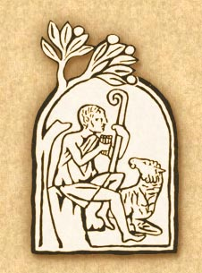

|
Compendium
 © Copyright 2005 - Libreria Editrice Vaticana
PART ONE
Section One: "I Believe" " "We Believe"
PART TWO
Section One: The
Sacramental Economy
PART THREE
Section One: Man's Vocation " Life In the Spirit
PART FOUR
Section One: Prayer in the Christian
Life
A. Common Prayers for the approval and publication
To my Venerable Brothers the Cardinals, Patriarchs, Archbishops, Bishops, Priests, Deacons and to all the People of God. Twenty years ago, work began on the Catechism of the Catholic Church that had been requested by the extraordinary Assembly of the Synod of Bishops held on the occasion of the twentieth anniversary of the close of the Second Vatican Council. I am filled with heartfelt thanks to the Lord God for having given the Church this Catechism, promulgated in 1992 by my venerated and beloved Predecessor, Pope John Paul II. The great value and beauty of this gift are confirmed above all by the extensive and positive reception of the Catechism among Bishops, to whom it was primarily addressed as a sure and authentic reference text for teaching Catholic doctrine and, in particular, for formulating local catechisms. But it was also confirmed by its vast favourable reception in all segments of the People of God, who have come to know and appreciate it in more than fifty translations which to date have been published. It is with great joy that I now approve and promulgate the Compendium of that Catechism. The Compendium had been fervently desired by the participants in the International Catechetical Congress of October 2002, which gave voice to a need widely felt in the Church. My beloved Predecessor, recognizing this desire, decided in February 2003 to begin preparation of the text by entrusting the work to a Commission of Cardinals, over which I presided, and which was assisted by various experts. In the course of the work, a draft of the Compendium was submitted to all the Cardinals and the Presidents of Conferences of Bishops, the vast majority of whom evaluated the text favourably. The Compendium, which I now present to the Universal Church, is a faithful and sure synthesis of the Catechism of the Catholic Church. It contains, in concise form, all the essential and fundamental elements of the Church"s faith, thus constituting, as my Predecessor had wished, a kind of vademecum which allows believers and non-believers alike to behold the entire panorama of the Catholic faith. In its structure, contents and language, the Compendium faithfully reflects the Catechism of the Catholic Church and will thus assist in making the Catechism more widely known and more deeply understood. I entrust this Compendium above all to the entire Church and, in particular, to every Christian, in order that it may awaken in the Church of the third millennium renewed zeal for evangelization and education in the faith, which ought to characterize every community in the Church and every Christian believer, regardless of age or nationality. But this Compendium, with its brevity, clarity and comprehensiveness, is directed to every human being, who, in a world of distractions and multifarious messages, desires to know the Way of Life, the Truth, entrusted by God to His Son"s Church. Through the intercession of Mary Most Holy, Mother of Christ and Mother of the Church, may everyone who reads this authoritative text recognize and embrace ever more fully the inexhaustible beauty, uniqueness and significance of the incomparable Gift which God has made to the human race in His only Son, Jesus Christ, the "Way, the Truth, and the Life" (Jn 14:6). Given on 28 June 2005, the vigil of the Solemnity of the Holy Apostles Peter and Paul, in the first year of my Pontificate. BENEDICTUS PP. XVI 1. On 11 October 1992, Pope John Paul II presented the Catechism of the Catholic Church to the faithful of the whole world, describing it as a "reference text"[1] for a catechesis renewed at the living sources of the faith. Thirty years after the opening of the Second Vatican Council (1962-1965), the desire for a catechism of all Catholic doctrine on faith and morals, which had been voiced in 1985 by the extraordinary Assembly of the Synod of Bishops, came to fulfilment. Five years later, on 15 August 1997, the Pope promulgated the editio typica of the Catechismus Catholicae Ecclesiae and confirmed its fundamental purpose "as a full, complete exposition of Catholic doctrine, enabling everyone to know what the Church professes, celebrates, lives and prays in her daily life".[2] 2. In order to realize more fully the Catechism"s potential and in response to the request that had emerged at the International Catechetical Congress of October 2002, Pope John Paul II, in 2003, established a Commission under the presidency of Cardinal Joseph Ratzinger, Prefect of the Congregation for the Doctrine of the Faith, which was given the task of drafting a Compendium of the Catechism of the Catholic Church, as a more concise formulation of its contents of faith. After two years of work, a draft compendium was prepared and distributed among the Cardinals and the Presidents of Conferences of Bishops for their consultation. The draft, as a whole, was evaluated positively in the great majority of the responses that were received. Therefore, the Commission proceeded to revise the draft and, taking account of the proposals for improvement that had been submitted, prepared the final text. 3. There are three principal characteristics of the Compendium: the close reliance on the Catechism of the Catholic Church; the dialogical format; the use of artistic images in the catechesis. The Compendium is not a work that stands alone, nor is it intended in any way to replace the Catechism of the Catholic Church: instead, it refers constantly to the Catechism by means of reference numbers printed in the margins, as well as by consistent reliance on its structure, development and contents. In fact, the Compendium is meant to reawaken interest in and enthusiasm for the Catechism, which, in the wisdom of its presentation and the depth of its spirituality, always remains the basic text for catechesis in the Church today. Like the Catechism, the Compendium has four parts, corresponding to the fundamental laws of life in Christ. The first part, entitled "The Profession of Faith", contains a synthesis of the lex credendi, the faith professed by the Catholic Church, as expressed in the Apostles" Creed which is further elaborated by the Nicene-Constantinopolitan Creed. In the liturgical profession of the Creed, the Christian assembly keeps the principal truths of the faith alive in memory. The second part, entitled "The Celebration of the Christian Mystery", presents the essential elements of the lex celebrandi. The proclamation of the Gospel finds its authentic response in the sacramental life, through which Christians experience and witness, in every moment of their existence, the saving power of the paschal mystery by which Christ has accomplished our redemption. The third part, entitled "Life in Christ", recalls the lex vivendi, through which the baptized manifest their commitment to the faith they have professed and celebrated, through their actions and ethical choices. The Christian faithful are called by the Lord Jesus to act in a way which befits their dignity as children of the Father in the charity of the Holy Spirit. The fourth part, entitled "Christian Prayer", summarizes the lex orandi, the life of prayer. Following the example of Jesus, the perfect model of one who prays, the Christian too is called to the dialogue with God in prayer. A privileged expression of prayer is the Our Father, the prayer that Jesus has taught us. 4. A second characteristic of the Compendium is its dialogical format, reflecting the ancient catechetical literary genre of questions and answers. The idea is to reproduce an imaginary dialogue between master and disciple, through a series of incisive questions that invite the reader to go deeper in discovering ever new aspects of his faith. The dialogical format also lends itself to brevity in the text, by reducing it to what is essential. This may help the reader to grasp the contents and possibly to memorize them as well. 5. A third characteristic is the inclusion of some artistic images which mark the elaboration of the Compendium. These are drawn from the rich patrimony of Christian iconography. The centuries-old conciliar tradition teaches us that images are also a preaching of the Gospel. Artists in every age have offered the principal facts of the mystery of salvation to the contemplation and wonder of believers by presenting them in the splendour of colour and in the perfection of beauty. It is an indication of how today more than ever, in a culture of images, a sacred image can express much more than what can be said in words, and be an extremely effective and dynamic way of communicating the Gospel message. 6. Forty years after the close of the Second Vatican Council and in the year of the Eucharist, this Compendium represents an additional resource for satisfying the hunger for truth among the Christian faithful of all ages and conditions, as well as the hunger for truth and justice among those who are without faith. The publication of the Compendium will take place on the solemnity of the Holy Apostles Peter and Paul, pillars of the Church universal and exemplary evangelizers of the ancient world. These apostles saw what they preached and witnessed to the truth of Christ even unto martyrdom. Let us imitate them in their missionary zeal and pray to the Lord that the Church may always follow the teaching of the apostles, from whom she first received the glorious proclamation of the faith. 20 March 2005, Palm Sunday. Joseph Cardinal Ratzinger [1] John Paul II, Apostolic Constitution Fidei depositum, 11 October 1992. [2]John Paul II, Apostolic Letter Laetarum magnopere, 15 August 1997.
Section One 1. What is the plan of God for man? 1-25 God, infinitely perfect and blessed in himself, in a plan of sheer goodness freely created man to make him share in his own blessed life. In the fullness of time, God the Father sent his Son as the Redeemer and Savior of mankind, fallen into sin, thus calling all into his Church and, through the work of the Holy Spirit, making them adopted children and heirs of his eternal happiness. CHAPTER ONE 30
2. Why does man have a desire for God? 27-30 God himself, in creating man in his own image, has written upon his heart the desire to see him. Even if this desire is often ignored, God never ceases to draw man to himself because only in God will he find and live the fullness of truth and happiness for which he never stops searching. By nature and by vocation, therefore, man is a religious being, capable of entering into communion with God. This intimate and vital bond with God confers on man his fundamental dignity. 3. How is it possible to know God with only the light of human reason? 31-36 Starting from creation, that is from the world and from the human person, through reason alone one can know God with certainty as the origin and end of the universe, as the highest good and as infinite truth and beauty. 4. Is the light of reason alone sufficient to know the mystery of God? 37-38 In coming to a knowledge of God by the light of reason alone man experiences many difficulties. Indeed, on his own he is unable to enter into the intimacy of the divine mystery. This is why he stands in need of being enlightened by God"s revelation, not only about those things that exceed his understanding, but also about those religious and moral truths which of themselves are not beyond the grasp of human reason, so that even in the present condition of the human race, they can be known by all with ease, with firm certainty and with no admixture of error. 5. How can we speak about God? 39-43 By taking as our starting point the perfections of man and of the other creatures which are a reflection, albeit a limited one, of the infinite perfection of God, we are able to speak about God with all people. We must, however, continually purify our language insofar as it is image-bound and imperfect, realizing that we can never fully express the infinite mystery of God. CHAPTER TWO The Revelation of God 6. What does God reveal to man? 50-53 God in his goodness and wisdom reveals himself. With deeds and words, he reveals himself and his plan of loving goodness which he decreed from all eternity in Christ. According to this plan, all people by the grace of the Holy Spirit are to share in the divine life as adopted "sons" in the only begotten Son of God. 7. What are the first stages of God's Revelation? 54-58 From the very beginning, God manifested himself to our first parents, Adam and Eve, and invited them to intimate communion with himself. After their fall, he did not cease his revelation to them but promised salvation for all their descendants. After the flood, he made a covenant with Noah, a covenant between himself and all living beings. 8. What are the next stages of God's Revelation? 59-64 God chose Abram, calling him out of his country, making him "the father of a multitude of nations" (Genesis 17:5), and promising to bless in him "all the nations of the earth" (Genesis 12:3). The people descended from Abraham would be the trustee of the divine promise made to the patriarchs. God formed Israel as his chosen people, freeing them from slavery in Egypt, establishing with them the covenant of Mount Sinai, and, through Moses, giving them his law. The prophets proclaimed a radical redemption of the people and a salvation which would include all nations in a new and everlasting covenant. From the people of Israel and from the house of King David, would be born the Messiah, Jesus. 9. What is the full and definitive stage of God's Revelation? 65-66 The full and definitive stage of God"s revelation is accomplished in his Word made flesh, Jesus Christ, the mediator and fullness of Revelation. He, being the only-begotten Son of God made man, is the perfect and definitive Word of the Father. In the sending of the Son and the gift of the Spirit, Revelation is now fully complete, although the faith of the Church must gradually grasp its full significance over the course of centuries.
10. What is the value of private revelations? 67 While not belonging to the deposit of faith, private revelations may help a person to live the faith as long as they lead us to Christ. The Magisterium of the Church, which has the duty of evaluating such private revelations, cannot accept those which claim to surpass or correct that definitive Revelation which is Christ. The Transmission of Divine Revelation 11. Why and in what way is divine revelation transmitted? 74 God "desires all men to be saved and to come to the knowledge of the truth" (1 Timothy 2:4), that is, of Jesus Christ. For this reason, Christ must be proclaimed to all according to his own command, "Go forth and teach all nations" (Matthew 28:19). And this is brought about by Apostolic Tradition. 12. What is Apostolic Tradition? 75-79, Apostolic Tradition is the transmission of the message of Christ, brought about from the very beginnings of Christianity by means of preaching, bearing witness, institutions, worship, and inspired writings. The apostles transmitted all they received from Christ and learned from the Holy Spirit to their successors, the bishops, and through them to all generations until the end of the world. 13. In what ways does Apostolic Tradition occur? 76 Apostolic Tradition occurs in two ways: through the living transmission of the word of God (also simply called Tradition) and through Sacred Scripture which is the same proclamation of salvation in written form. 14. What is the relationship between Tradition and Sacred Scripture? 80-82 Tradition and Sacred Scripture are bound closely together and communicate one with the other. Each of them makes present and fruitful in the Church the mystery of Christ. They flow out of the same divine well-spring and together make up one sacred deposit of faith from which the Church derives her certainty about revelation. 15. To whom is the deposit of faith entrusted? 84, 91 The Apostles entrusted the deposit of faith to the whole of the Church. Thanks to its supernatural sense of faith the people of God as a whole, assisted by the Holy Spirit and guided by the Magisterium of the Church, never ceases to welcome, to penetrate more deeply and to live more fully from the gift of divine revelation. 16. To whom is given the task of authentically interpreting the deposit of faith? 85-90 The task of giving an authentic interpretation of the deposit of faith has been entrusted to the living teaching office of the Church alone, that is, to the successor of Peter, the Bishop of Rome, and to the bishops in communion with him. To this Magisterium, which in the service of the Word of God enjoys the certain charism of truth, belongs also the task of defining dogmas which are formulations of the truths contained in divine Revelation. This authority of the Magisterium also extends to those truths necessarily connected with Revelation. 17. What is the relationship between Scripture, Tradition and the Magisterium? 95 Scripture, Tradition, and the Magisterium are so closely united with each other that one of them cannot stand without the others. Working together, each in its own way, under the action of the one Holy Spirit, they all contribute effectively to the salvation of souls. Sacred Scripture 18. Why does Sacred Scripture teach the truth? 105-108 Because God himself is the author of Sacred Scripture. For this reason it is said to be inspired and to teach without error those truths which are necessary for our salvation. The Holy Spirit inspired the human authors who wrote what he wanted to teach us. The Christian faith, however, is not a "religion of the Book", but of the Word of God " "not a written and mute word, but incarnate and living" (Saint Bernard of Clairvaux). 19. How is Sacred Scripture to be read? 109-119 Sacred Scripture must be read and interpreted with the help of the Holy Spirit and under the guidance of the Magisterium of the Church according to three criteria: 1) it must be read with attention to the content and unity of the whole of Scripture; 2) it must be read within the living Tradition of the Church; 3) it must be read with attention to the analogy of faith, that is, the inner harmony which exists among the truths of the faith themselves. 20. What is the Canon of Scripture? 120 The Canon of Scripture is the complete list of the sacred writings which the Church has come to recognize through Apostolic Tradition. The Canon consists of 46 books of the Old Testament and 27 of the New. 21. What is the importance of the Old Testament for Christians? 121-123 Christians venerate the Old Testament as the true word of God. All of the books of the Old Testament are divinely inspired and retain a permanent value. They bear witness to the divine pedagogy of God's saving love. They are written, above all, to prepare for the coming of Christ the Savior of the universe. 22. What importance does the New Testament have for Christians? 124-127 The New Testament, whose central object is Jesus Christ, conveys to us the ultimate truth of divine Revelation. Within the New Testament the four Gospels of Mathew, Mark, Luke and John are the heart of all the Scriptures because they are the principle witness to the life and teaching of Jesus. As such, they hold a unique place in the Church. 23. What is the unity that exists between the Old and the New Testaments? 128-130 Scripture is one insofar as the Word of God is one. God"s plan of salvation is one, and the divine inspiration of both Testaments is one. The Old Testament prepares for the New and the New Testament fulfills the Old; the two shed light on each other. 24. What role does Sacred Scripture play in the life of the Church? 131-133 Sacred Scripture gives support and vigor to the life of the Church. For the children of the Church, it is a confirmation of the faith, food for the soul and the fount of the spiritual life. Sacred Scripture is the soul of theology and of pastoral preaching. The Psalmist says that it is "a lamp to my feet and a light to my path" (Psalm 119:105). The Church, therefore, exhorts all to read Sacred Scripture frequently because "ignorance of the Scriptures is ignorance of Christ" (Saint Jerome). CHAPTER THREE I Believe 25. How does man respond to God who reveals himself? 142-143 Sustained by divine grace, we respond to God with the obedience of faith, which means the full surrender of ourselves to God and the acceptance of his truth insofar as it is guaranteed by the One who is Truth itself. 26. Who are the principal witnesses of the obedience of faith in the Sacred Scriptures? 144-149 There are many such witnesses, two in particular: One is Abraham who when put to the test "believed in God" (Romans 4:3) and always obeyed his call. For this reason he is called "the Father of all who believe" (Romans 4:11-18). The other is the Virgin Mary who, throughout her entire life, embodied in a perfect way the obedience of faith: "Let it be done to me according to your word" (Luke 1:38). 27. What does it mean in practice for a person to believe in God? 150-152 It means to adhere to God himself, entrusting oneself to him and giving assent to all the truths which God has revealed because God is Truth. It means to believe in one God in three Persons, Father, Son, and Holy Spirit. 28. What are the characteristics of faith? 153-165 Faith is the supernatural virtue which is necessary for salvation. It is a free gift of God and is accessible to all who humbly seek it. The act of faith is a human act, that is, an act of the intellect of a person - prompted by the will moved by God - who freely assents to divine truth. Faith is also certain because it is founded on the Word of God; it works "through charity" (Galatians 5:6); and it continually grows through listening to the Word of God and through prayer. It is, even now, a foretaste of the joys of heaven. 29. Why is there no contradiction between faith and science? 159 Though faith is above reason, there can never be a contradiction between faith and science because both originate in God. It is God himself who gives to us the light both of reason and of faith.
We Believe 30. Why is faith a personal act, and at the same time ecclesial? 166-169 Faith is a personal act insofar as it is the free response of the human person to God who reveals himself. But at the same time it is an ecclesial act which expresses itself in the proclamation, "We believe". It is in fact the Church that believes: and thus by the grace of the Holy Spirit precedes, engenders and nourishes the faith of each Christian For this reason the Church is Mother and Teacher.
31. Why are the formulas of faith important? 170-171 The formulas of faith are important because they permit one to express, assimilate, celebrate, and share together with others the truths of the faith through a common language. 32. In what way is the faith of the Church one faith alone? 172-175 The Church, although made up of persons who have diverse languages, cultures, and rites, nonetheless professes with a united voice the one faith that was received from the one Lord and that was passed on by the one Apostolic Tradition. She confesses one God alone, Father, Son, and Holy Spirit, and points to one way of salvation. Therefore we believe with one heart and one soul all that is contained in the Word of God, handed down or written, and which is proposed by the Church as divinely revealed. Section Two The Creed The Apostles" CreedI believe in God the Father almighty,
Symbolum
Apostolicum I believe in one God, I believe one Lord, Jesus Christ, For us men and for our salvation, For our sake He was crucified On the third day He rose again He ascended into heaven, I believe in the Holy Spirit, I believe in one, holy, catholic, I acknowledge one Baptism Amen.
Symbolum
Nic"num
Costantinopolitanum CHAPTER ONE The Symbols of Faith 33. What are the symbols of faith? 185-188 The symbols of faith are composite formulas, also called "professions of faith" or "Creeds", with which the Church from her very beginning has set forth synthetically and handed on her own faith in a language that is normative and common to all the faithful. 34. What are the most ancient symbols (professions) of faith? 189-191 The most ancient symbols of faith are the baptismal creeds. Because Baptism is conferred "in the name of the Father, and of the Son, and of the Holy Spirit" (Matthew 28:19), the truths of faith professed at Baptism are articulated in reference to the three Persons of the Most Holy Trinity. 35. What are the most important symbols of the faith? 193-195 They are the Apostles' Creed which is the ancient baptismal symbol of the Church of Rome and the Nicene-Constantinopolitan Creed which stems from the first two ecumenical Councils, that of Nicea (325 A.D.) and that of Constantinople (381 A.D.) and which even to this day are common to all the great Churches of the East and the West. "I believe in God the Father Almighty, 36. Why does the Profession of Faith begin with the words, "I believe in God"? 198-199 The Profession of Faith begins with these words because the affirmation "I believe in God" is the most important, the source of all the other truths about man and about the world, and about the entire life of everyone who believes in God. 37. Why does one profess belief that there is only one God? 200-202 Belief in the one God is professed because he has revealed himself to the people of Israel as the only One when he said, "Hear, O Israel, the Lord our God is one Lord" (Deuteronomy 6:4) and "there is no other" (Isaiah 45:22). Jesus himself confirmed that God is "the one Lord" (Mark 12:29). To confess that Jesus and the Holy Spirit are also God and Lord does not introduce any division into the one God. 38. With what name does God reveal Himself? 203-209 God revealed himself to Moses as the living God, "the God of Abraham, the God of Isaac, the God of Jacob" (Exodus 3:6). God also revealed to Moses his mysterious name "I Am Who I Am (YHWH)". Already in Old Testament times this ineffable name of God was replaced by the divine title Lord. Thus in the New Testament, Jesus who was called Lord is seen as true God. 39. Is God the only One who "is"? 2112-213 Since creatures have received everything they are and have from God, only God in himself is the fullness of being and of every perfection. God is "He who is" without origin and without end. Jesus also reveals that he bears the divine name "I Am" (John 8:28). 40. Why is the revelation of God's name important? 206-213 In revealing his name, God makes known the riches contained in the ineffable mystery of his being. He alone is from everlasting to everlasting. He is the One who transcends the world and history. It is he who made heaven and earth. He is the faithful God, always close to his people, in order to save them. He is the highest holiness, "rich in mercy" (Ephesians 2:4), always ready to forgive. He is the One who is spiritual, transcendent, omnipotent, eternal, personal, and perfect. He is truth and love.
41. In what way is God the truth? 214-217 God is Truth itself and as such he can neither deceive nor be deceived. He is "light, and in him there is no darkness" (1 John 1:5). The eternal Son of God, the incarnation of wisdom, was sent into the world "to bear witness to the Truth" (John 18:37). 42. In what way does God reveal that he is love? 218-221 God revealed himself to Israel as the One who has a stronger love than that of parents for their children or of husbands and wives for their spouses. God in himself "is love" (1 John 4: 8.16), who gives himself completely and gratuitously, who "so loved the world that he gave his only Son so that the world might be saved through him" (John 3:16-17). By sending his Son and the Holy Spirit, God reveals that he himself is an eternal exchange of love. 43. What does it mean to believe in only one God? 222-227 To believe in the one and only God involves coming to know his greatness and majesty. It involves living in thanksgiving and trusting always in him, even in adversity. It involves knowing the unity and true dignity of all human beings, created in his image. It involves making good use of the things which he has created. 44. What is the central mystery of Christian faith and life? 232-237 The central mystery of Christian faith and life is the mystery of the Most Blessed Trinity. Christians are baptized in the name of the Father and of the Son and of the Holy Spirit. 45. Can the mystery of the Most Holy Trinity be known by the light of human reason alone? 237 God has left some traces of his trinitarian being in creation and in the Old Testament but his inmost being as the Holy Trinity is a mystery which is inaccessible to reason alone or even to Israel"s faith before the Incarnation of the Son of God and the sending of the Holy Spirit. This mystery was revealed by Jesus Christ and it is the source of all the other mysteries. 46. What did Jesus Christ reveal to us about the mystery of the Father? 240-242 Jesus Christ revealed to us that God is "Father", not only insofar as he created the universe and the mankind, but above all because he eternally generated in his bosom the Son who is his Word, " the radiance of the glory of God and the very stamp of his nature" (Hebrews 1:3). 47. Who is the Holy Spirit revealed to us by Jesus Christ? 243-248 The Holy Spirit is the third Person of the Most Blessed Trinity. He is God, one and equal with the Father and the Son. He "proceeds from the Father" (John 15:26) who is the principle without a principle and the origin of all trinitarian life. He proceeds also from the Son (Filioque) by the eternal Gift which the Father makes of him to the Son. Sent by the Father and the Incarnate Son, the Holy Spirit guides the Church "to know all truth" (John 16:13). 48. How does the Church express her trinitarian faith? 249-256 The Church expresses her trinitarian faith by professing a belief in the oneness of God in whom there are three Persons: Father, Son, and Holy Spirit. The three divine Persons are only one God because each of them equally possesses the fullness of the one and indivisible divine nature. They are really distinct from each other by reason of the relations which place them in correspondence to each other. The Father generates the Son; the Son is generated by the Father; the Holy Spirit proceeds from the Father and the Son. 49. How do the three divine Persons work? 257-260 Inseparable in their one substance, the three divine Persons are also inseparable in their activity. The Trinity has one operation, sole and the same. In this one divine action, however, each Person is present according to the mode which is proper to him in the Trinity.
50. What does it mean to say that God is almighty? 268-278 God reveals himself as "the strong One, the mighty One" (Psalm 24:8), as the One "to whom nothing is impossible" (Luke 1:37). His omnipotence is universal, mysterious and shows itself in the creation of the world out of nothing and humanity out of love; but above all it shows itself in the Incarnation and the Resurrection of his Son, in the gift of filial adoption and in the forgiveness of sins. For this reason, the Church directs her prayers to the "almighty and eternal God" ("Omnipotens sempiterne Deus..."). 51. What is the importance of affirming "In the beginning God created the heavens and the earth" (Genesis 1:1)? 279-289 The significance is that creation is the foundation of all God"s saving plans. It shows forth the almighty and wise love of God, and it is the first step toward the covenant of the one God with his people. It is the beginning of the history of salvation which culminates in Christ; and it is the first answer to our fundamental questions regarding our very origin and destiny. 52. Who created the world? 290-292 The Father, the Son, and the Holy Spirit are the one and indivisible principle of creation even though the work of creating the world is particularly attributed to God the Father. 53. Why was the world created? 293-294 The world was created for the glory of God who wished to show forth and communicate his goodness, truth and beauty. The ultimate end of creation is that God, in Christ, might be "all in all" (1 Corinthians 15:28) for his glory and for our happiness.
54. How did God create the universe? 295-301 God created the universe freely with wisdom and love. The world is not the result of any necessity, nor of blind fate, nor of chance. God created "out of nothing" (ex nihilo) (2 Maccabees 7:28) a world which is ordered and good and which he infinitely transcends. God preserves his creation in being and sustains it, giving it the capacity to act and leading it toward its fulfillment through his Son and the Holy Spirit. 55. What is divine providence? 302-306 Divine Providence consists in the dispositions with which God leads his creatures toward their ultimate end. God is the sovereign Master of his own plan. To carry it out, however, he also makes use of the cooperation of his creatures. For God grants his creatures the dignity of acting on their own and of being causes for each other. 56. How do we collaborate with divine Providence? 307-308 While respecting our freedom, God asks us to cooperate with him and gives us the ability to do so through actions, prayers and sufferings, thus awakening in us the desire "to will and to work for his good pleasure" (Philippians 2:13). 57. If God is omnipotent and provident, why then does evil exist? 309-310 To this question, as painful and mysterious as it is, only the whole of Christian faith can constitute a response. God is not in any way - directly or indirectly - the cause of evil. He illuminates the mystery of evil in his Son Jesus Christ who died and rose in order to vanquish that great moral evil, human sin, which is at the root of all other evils. 58. Why does God permit evil? 311-314 Faith gives us the certainty that God would not permit evil if he did not cause a good to come from that very evil. This was realized in a wondrous way by God in the death and resurrection of Christ. In fact, from the greatest of all moral evils (the murder of his Son) he has brought forth the greatest of all goods (the glorification of Christ and our redemption). Heaven and Earth 59. What did God create? 325-327 Sacred Scripture says, "In the beginning, God created the heavens and the earth" (Genesis 1:1). The Church in her profession of faith proclaims that God is the Creator of everything, visible and invisible, of all spiritual and corporeal beings, that is, of angels and of the visible world and, in a special way, of man. 60. Who are the angels? 328-333 The angels are purely spiritual creatures, incorporeal, invisible, immortal, and personal beings endowed with intelligence and will. They ceaselessly contemplate God face-to-face and they glorify him. They serve him and are his messengers in the accomplishment of his saving mission to all. 61. In what way are angels present in the life of the Church? 334-336 The Church joins with the angels in adoring God, invokes their assistance and commemorates some in her liturgy.
62. What does Sacred Scripture teach about the creation of the visible world? 337-344 Through the account of the "six days" of creation Sacred Scripture teaches us the value of the created world and its purpose, namely, to praise God and to serve humanity. Every single thing owes its very existence to God from whom it receives its goodness and perfection, its proper laws and its proper place in the universe. 63. What is the place of the human person in creation? 343-344 The human person is the summit of visible creation in as much as he or she is created in the image and likeness of God. 64. What kind of bond exists between created things? 342 There exist an interdependence and a hierarchy among creatures as willed by God. At the same time, there is also a unity and solidarity among creatures since all have the same Creator, are loved by him and are ordered to his glory. Respecting the laws inscribed in creation and the relations which derive from the nature of things is, therefore, a principle of wisdom and a foundation for morality. 65. What is the relationship between the work of creation and the work of redemption? 345-349 The work of creation culminates in the still greater work of redemption, which in fact gives rise to a new creation in which everything will recover its true meaning and fulfillment. Man 66. In what sense do we understand man and woman as created "in the image of God"? 355-357 The human person is created in the image of God in the sense that he or she is capable of knowing and of loving their Creator in freedom. Human beings are the only creatures on earth that God has willed for their own sake and has called to share, through knowledge and love, in his own divine life. All human beings, in as much as they are created in the image of God, have the dignity of a person. A person is not something but someone, capable of self-knowledge and of freely giving himself and entering into communion with God and with other persons. 67. For what purpose did God create man and woman? 358-359 God has created everything for them; but he has created them to know, serve and love God, to offer all of creation in this world in thanksgiving back to him and to be raised up to life with him in heaven. Only in the mystery of the incarnate Word does the mystery of the human person come into true light. Man and woman are predestined to reproduce the image of the Son of God made Man, who is the perfect "image of the invisible God" (Colossians 1:15). 68. Why does the human race form a unity? 360-361 All people form the unity of the human race by reason of the common origin which they have from God. God has made "from one ancestor all the nations of men" (Acts 17:26). All have but one Savior and are called to share in the eternal happiness of God. 69. How do the soul and body form a unity in the human being? 362-365 The human person is a being at once corporeal and spiritual. In man spirit and matter form one nature. This unity is so profound that, thanks to the spiritual principle which is the soul, the body which is material, becomes a living human body and participates in the dignity of the image of God. 70. Where does the soul come from? 366-368 The spiritual soul does not come from one"s parents but is created immediately by God and is immortal. It does not perish at the moment when it is separated from the body in death and it will be once again reunited with the body at the moment of the final resurrection. 71. What relationship has God established between man and woman? 369-373 Man and woman have been created by God in equal dignity insofar as they are human persons. At the same time, they have been created in a reciprocal complementarity insofar as they are masculine and feminine. God has willed them one for the other to form a communion of persons. They are also called to transmit human life by forming in matrimony "one flesh" (Genesis 2:24). They are likewise called to subdue the earth as "stewards" of God. 72. What was the original condition of the human person according to the plan of God? 374-379 In creating man and woman God had given them a special participation in his own divine life in holiness and justice. In the plan of God they would not have had to suffer or die. Furthermore, a perfect harmony held sway within the human person, a harmony between creature and Creator, between man and woman, as well as between the first human couple and all of creation. The Fall 73. How should we understand the reality of sin? 385-389 Sin is present in human history. This reality of sin can be understood clearly only in the light of divine revelation and above all in the light of Christ the Savior of all. Where sin abounded, he made grace to abound all the more. 74. What was the fall of the angels? 391-395 This expression indicates that Satan and the other demons, about which Sacred Scripture and the Tradition of the Church speak, were angels, created good by God. They were, however, transformed into evil because with a free and irrevocable choice they rejected God and his Kingdom, thus giving rise to the existence of hell. They try to associate human beings with their revolt against God. However, God has wrought in Christ a sure victory over the Evil One. 75. What was the first human sin? 396-403 When tempted by the devil, the first man and woman allowed trust in their Creator to die in their hearts. In their disobedience they wished to become "like God" but without God and not in accordance with God (Genesis 3:5). Thus, Adam and Eve immediately lost for themselves and for all their descendants the original grace of holiness and justice. 76. What is original sin? 404 Original sin, in which all human beings are born, is the state of deprivation of original holiness and justice. It is a sin "contracted" by us not "committed"; it is a state of birth and not a personal act. Because of the original unity of all human beings, it is transmitted to the descendants of Adam "not by imitation, but by propagation". This transmission remains a mystery which we cannot fully understand. 77. What other consequences derive from original sin? 405-409 In consequence of original sin human nature, without being totally corrupted, is wounded in its natural powers. It is subject to ignorance, to suffering, and to the dominion of death and is inclined toward sin. This inclination is called concupiscence. 78. After the first sin, what did God do? 410-412 After the first sin the world was inundated with sin but God did not abandon man to the power of death. Rather, he foretold in a mysterious way in the "Protoevangelium" (Genesis 3:15) that evil would be conquered and that man would be lifted up from his fall. This was the first proclamation of the Messiah and Redeemer. Therefore, the fall would be called in the future a "happy fault" because it "gained for us so great a Redeemer" (Liturgy of the Easter Vigil). CHAPTER TWO I Believe in Jesus Christ, the Only Son of God 79. What is the Good News for humanity? 422-424 It is the proclamation of Jesus Christ, the "Son of the living God" (Matthew 16:16), who died and rose from the dead. In the time of King Herod and the Emperor Caesar Augustus, God fulfilled the promises that he made to Abraham and his descendants. He sent "his Son, born of a woman, born under the law, to redeem those who were under the law, so that we might receive adoption as sons" (Galatians 4:4-5). 80. How is the Good News spread? 425-429 From the very beginning the first disciples burned with the desire to proclaim Jesus Christ in order to lead all to faith in him. Even today, from the loving knowledge of Christ there springs up in the believer the desire to evangelize and catechize, that is, to reveal in the Person of Christ the entire design of God and to put humanity in communion with him. "And in Jesus Christ, His only Son our Lord" 81. What is the meaning of the name "Jesus"? 430-435 Given by the angel at the time of the Annunciation, the name "Jesus" means "God saves". The name expresses his identity and his mission "because he will save his people from their sins" (Matthew 1:21). Peter proclaimed that "there is no other name under heaven given to men by which we can be saved" (Acts 4:12). 82. Why is Jesus called "Christ"? 436-440 "Christ" in Greek, "Messiah" in Hebrew, means the "anointed one". Jesus is the Christ because he is consecrated by God and anointed by the Holy Spirit for his redeeming mission. He is the Messiah awaited by Israel, sent into the world by the Father. Jesus accepted the title of Messiah but he made the meaning of the term clear: "come down from heaven" (John 3:13), crucified and then risen , he is the Suffering Servant "who gives his life as a ransom for the many" (Matthew 20:28). From the name Christ comes our name of Christian. 83. In what sense is Jesus the Only Begotten Son of God? 441-445 Jesus is the Son of God in a unique and perfect way. At the time of his Baptism and his Transfiguration, the voice of the Father designated Jesus as his "beloved Son". In presenting himself as the Son who "knows the Father" (Matthew 11:27), Jesus affirmed his singular and eternal relationship with God his Father. He is "the Only Begotten Son of God" (1 John 4:9), the second Person of the Blessed Trinity. He is the central figure of apostolic preaching. The apostles saw "his glory as of the Only Begotten of the Father" (John 1:14). 84. What is the meaning of the title "Lord"? 446-451 In the Bible this title regularly designates God as Sovereign. Jesus ascribed this title to himself and revealed his divine sovereignty by his power over nature, over demons, over sin, and over death, above all by his own Resurrection. The first Christian creeds proclaimed that the power, the honor, and the glory that are due to God the Father also belong to Jesus: God "has given him the name which is above every other name" (Philippians 2:9). He is the Lord of the world and of history, the only One to whom we must completely submit our personal freedom.
85. Why did the Son of God become man? 456-460 For us men and for our salvation, the Son of God became incarnate in the womb of the Virgin Mary by the power of the Holy Spirit. He did so to reconcile us sinners with God, to have us learn of God"s infinite love, to be our model of holiness and to make us "partakers of the divine nature" (2 Peter 1:4). 86. What does the word "Incarnation" mean? 461-463 The Church calls the mystery of the wonderful union of the divine and human natures in the one divine Person of the Word the "Incarnation". To bring about our salvation the Son of God was made "flesh" (John 1:14) and became truly man. Faith in the Incarnation is a distinctive sign of the Christian faith. 87. In what way is Jesus Christ true God and true man? 464-467 Jesus is inseparably true God and true man in the unity of his divine Person. As the Son of God, who is "begotten, not made, consubstantial with the Father," he was made true man, our brother, without ceasing to be God, our Lord. 88. What does the Council of Chalcedon (in the year 451) teach in this regard? 467 The Council of Chalcedon teaches us to confess "one and the same Son, our Lord Jesus Christ, perfect in his humanity, true God and true man, composed of rational soul and body, consubstantial with the Father by his divinity, and consubstantial with us by his humanity, "like us in all things but sin" (Hebrews 4:15), begotten from the Father before all ages as to his divinity, and in these last days, for us and for our salvation, born of Mary, the Virgin and Mother of God, as to his humanity." 89. How does the Church set forth the Mystery of the Incarnation? 464-470 The Church confesses that Jesus Christ is true God and true man, with two natures, a divine nature and a human nature, not confused with each other but united in the Person of the Word. Therefore, in the humanity of Jesus all things - his miracles, his suffering, and his death - must be attributed to his divine Person which acts by means of his assumed human nature.
90. Did the incarnate Son of God have a soul with human knowledge? 470-474 The Son of God assumed a body animated by a rational human soul. With his human intellect Jesus learned many things by way of experience; but also as man the Son of God had an intimate and immediate knowledge of God his Father. He likewise understood people"s secret thoughts and he knew fully the eternal plans which he had come to reveal. 91. How did the two wills of the incarnate Word cooperate? 475 Jesus had a divine will and a human will. In his earthly life the Son of God humanly willed all that he had divinely decided with the Father and the Holy Spirit for our salvation. The human will of Christ followed without opposition or reluctance the divine will or, in other words, it was subject to it. 92. Did Christ have a true human body? 476-477 Christ assumed a true human body by means of which the invisible God became visible. This is the reason why Christ can be represented and venerated in sacred images. 93. What does the heart of Jesus exemplify? 478 Jesus knew us and loved us with a human heart. His Heart, pierced for our salvation, is the symbol of that infinite love with which he loves the Father and each one of us. 94. What is the meaning of the expression "conceived by the power of the Holy Spirit..."? 484-486 This expression means that the Virgin Mary conceived the eternal Son in her womb by the power of the Holy Spirit without the cooperation of a man. The angel told her at the Annunciation that "the Holy Spirit will come upon you" (Luke 1:35). 95. "...Born of the Virgin Mary": Why is Mary truly the Mother of God? 495 Mary is truly the Mother of God because she is the Mother of Jesus (John 2:1, John 19:25). The One who was conceived by the power of the Holy Spirit and became truly her Son is actually the eternal Son of God the Father. He is God himself. 96. What does the "Immaculate Conception" mean? 487-492 God freely chose Mary from all eternity to be the Mother of his Son. In order to carry out her mission she herself was conceived immaculate. This means that, thanks to the grace of God and in anticipation of the merits of Jesus Christ, Mary was preserved from original sin from the first instant of her conception. 97. How does Mary cooperate in the divine plan of salvation? 493-494 By the grace of God Mary was kept free from every personal sin her whole life long. She is the one who is "full of grace" (Luke 1:28), "the all holy". When the angel announced to her that she would give birth to "the Son of the Most High" (Luke 1:32), she freely gave her consent with "the obedience of faith" (Romans 1:5). Mary thus gave herself entirely to the person and work of her Son Jesus, espousing wholeheartedly the divine will regarding salvation. 98. What does the virginal conception of Jesus mean? 496-498 The virginal conception of Jesus means that Jesus was conceived in the womb of the Virgin solely by the power of the Holy Spirit without the intervention of a man. He is the Son of the heavenly Father according to his divine nature and the Son of Mary according to his human nature. He is, however, truly the Son of God in both natures since there is in him only one Person who is divine. 99. In what sense is Mary "ever Virgin"? 499-507 Mary is ever virgin in the sense that she "remained a virgin in conceiving her Son, a virgin in giving birth to him, a virgin in carrying him, a virgin in nursing him at her breast, always a virgin" (Saint Augustine). Therefore, when the Gospels speak of the "brothers and sisters of Jesus", they are talking about the close relations of Jesus, according to the way of speaking used in Sacred Scripture. 100. In what way is the spiritual motherhood of Mary universal? 501-507 Mary had only one Son, Jesus, but in him her spiritual motherhood extends to all whom he came to save. Obediently standing at the side of the new Adam, Jesus Christ, the Virgin is the new Eve, the true mother of all the living, who with a mother's love cooperates in their birth and their formation in the order of grace. Virgin and Mother, Mary is the figure of the Church, its most perfect realization. 101. In what sense is the life of Christ a Mystery? 512-521 The entire life of Christ is a revelation. What was visible in the earthly life of Jesus leads us to the invisible mystery of his divine sonship: "whoever has seen me has seen the Father" (John 14:9). Furthermore, even though salvation comes completely from the cross and the resurrection, the entire life of Christ is a mystery of redemption because everything that Jesus did, said, and suffered had for its aim the salvation of fallen human beings and the restoration of their vocation as children of God. 102. How did God prepare the world for the mystery of Christ? 522-524 God prepared for the coming of his Son over the centuries. He awakened in the hearts of the pagans a dim expectation of this coming and he prepared for it specifically through the Old Testament, culminating with John the Baptist who was the last and greatest of the prophets. We relive this long period of expectancy in the annual liturgical celebration of the season of Advent. 103. What does the Gospel teach about the mysteries of the birth and infancy of Jesus? 525-530 At Christmas the glory of heaven is shown forth in the weakness of a baby; the circumcision of Jesus is a sign of his belonging to the Hebrew people and is a prefiguration of our Baptism; the Epiphany is the manifestation of the Messiah King of Israel to all the nations; at the presentation in the temple, Simeon and Anna symbolise all the anticipation of Israel awaiting its encounter with its Savior; the flight into Egypt and the massacre of the innocents proclaim that the entire life of Christ will be under the sign of persecution; the departure from Egypt recalls the exodus and presents Jesus as the new Moses and the true and definitive liberator. 104. What does the hidden life of Jesus in Nazareth teach us? 533-534 In the course of his hidden life in Nazareth Jesus stayed in the silence of an ordinary existence. This allows us to enter into fellowship with him in the holiness to be found in a daily life marked by prayer, simplicity, work and family love. His obedience to Mary and to Joseph, his foster father, is an image of his filial obedience to the Father. Mary and Joseph accepted with faith the mystery of Jesus even though they did not always understand it. 105. Why did Jesus receive from John the "baptism of repentance for the forgiveness of sins" (Luke 3:3)? 535-537 To inaugurate his public life and to anticipate the "Baptism" of his death, he who was without sin accepted to be numbered among sinners. He was "the Lamb of God who takes away the sin of the world" (John 1:29). The Father proclaimed him to be "his beloved Son" (Matthew 3:17) and the Spirit descended upon him. The baptism of Jesus is a prefiguring of our baptism. 106. What do we learn from the temptations of Jesus in the desert? 538-540 The temptations of Jesus in the desert recapitulate the temptation of Adam in Paradise and the temptations of Israel in the desert. Satan tempts Jesus in regard to his obedience to the mission given him by the Father. Christ, the new Adam, resists and his victory proclaims that of his passion which is the supreme obedience of his filial love. The Church unites herself to this mystery in a special way in the liturgical season of Lent. 107. Who is invited to come into the Kingdom of God proclaimed and brought about by Jesus? 541-546 All are invited by Jesus to enter the Kingdom of God. Even the worst of sinners is called to convert and to accept the boundless mercy of the Father. Already here on earth, the Kingdom belongs to those who accept it with a humble heart. To them the mysteries of the Kingdom are revealed. 108. Why did Jesus manifest the Kingdom by means of signs and miracles? 547-550 Jesus accompanied his words with signs and miracles to bear witness to the fact that the Kingdom is present in him, the Messiah. Although he healed some people, he did not come to abolish all evils here below but rather to free us especially from the slavery of sin. The driving out of demons proclaimed that his cross would be victorious over "the ruler of this world" (John 12:31). 109. In the Kingdom, what authority did Jesus bestow upon his Apostles? 551-553 Jesus chose the twelve, the future witnesses of his Resurrection, and made them sharers of his mission and of his authority to teach, to absolve from sins, and to build up and govern the Church. In this college, Peter received "the keys of the Kingdom" (Matthew 16:19) and assumed the first place with the mission to keep the faith in its integrity and to strengthen his brothers. 110. What is the meaning of the Transfiguration? 554-556 Above all the Transfiguration shows forth the Trinity: "the Father in the voice, the Son in the man Jesus, the Spirit in the shining cloud" (Saint Thomas Aquinas). Speaking with Moses and Elijah about his "departure" (Luke 9:31), Jesus reveals that his glory comes by way of the cross and he anticipates his resurrection and his glorious coming "which will change our lowly body to be like his glorious body" (Philippians 3:21).
111. How did the messianic entrance into Jerusalem come about? 557-560 At the established time Jesus chose to go up to Jerusalem to suffer his passion and death, and to rise from the dead. As the Messiah King who shows forth the coming of the Kingdom, he entered into his city mounted on a donkey. He was acclaimed by the little children whose shout of joyful praise is taken up in the Sanctus of the Eucharistic liturgy: "Blessed is He Who comes in the name of the Lord! Hosanna (save us!)" (Matthew 21:9). The liturgy of the Church opens Holy Week by celebrating this entry into Jerusalem. "Jesus Christ suffered under Pontius Pilate 112. What is the importance of the Paschal Mystery of Jesus? 571-573 The Paschal Mystery of Jesus, which comprises his passion, death, resurrection, and glorification, stands at the center of the Christian faith because God's saving plan was accomplished once for all by the redemptive death of his Son Jesus Christ. 113. What were the accusations by which Jesus was condemned to death? 574-576 Some of the leaders of Israel accused Jesus of acting against the law, the temple in Jerusalem, and in particular against faith in the one God because he proclaimed himself to be the Son of God. For this reason they handed him over to Pilate so that he might condemn him to death. 114. How did Jesus conduct himself in regard to the Law of Israel? 577-582 Jesus did not abolish the Law given by God to Moses on Mount Sinai but he fulfilled it by giving it its definitive interpretation. He himself was the divine Legislator who fully carried out this Law. Furthermore, as the faithful Servant, he offered by means of his expiatory death the only sacrifice capable of making atonement for all the "transgressions committed by men under the first Covenant" (Hebrews 9:15). 115. What was the attitude of Jesus toward the temple in Jerusalem? 583-586 Jesus was accused of hostility to the temple. On the contrary, he venerated it as "the house of his Father" (John 2:16); and it was there that he imparted an important part of his teaching. However, he also foretold its destruction in connection with his own death and he presented himself as the definitive dwelling place of God among men. 116. Did Jesus contradict Israel's faith in the one God and savior? 587-591 Jesus never contradicted faith in the one God, not even when he performed the stupendous divine work which fulfilled the messianic promises and revealed himself as equal to God, namely the pardoning of sins. However, the call of Jesus to believe in him and to be converted makes it possible to understand the tragic misunderstanding of the Sanhedrin which judged Jesus to be worthy of death as a blasphemer. 117. Who is responsible for the death of Jesus? 595-598 The passion and death of Jesus cannot be imputed indiscriminately either to all the Jews that were living at that time or to their descendants. Every single sinner, that is, every human being is really the cause and the instrument of the sufferings of the Redeemer; and the greater blame in this respect falls on those above all who are Christians and who the more often fall into sin or delight in their vices. 118. Why was the death of Jesus part of God's plan? 599-605 To reconcile to himself all who were destined to die because of sin God took the loving initiative of sending his Son that he might give himself up for sinners. Proclaimed in the Old Testament, especially as the sacrifice of the Suffering Servant, the death of Jesus came about "in accordance with the Scriptures". 119. In what way did Christ offer himself to the Father? 606-609 The entire life of Christ was a free offering to the Father to carry out his plan of salvation. He gave "his life as a ransom for many" (Mark 10:45) and in this way he reconciled all of humanity with God. His suffering and death showed how his humanity was the free and perfect instrument of that divine love which desires the salvation of all people. 120. How is Jesus" offering expressed at the Last Supper? 610-611 At the Last Supper with his apostles on the eve of his passion Jesus anticipated, that is, both symbolized his free self-offering and made it really present: "This is my Body which is given for you" (Luke 22:19), "This is my Blood which is poured out..." (Matthew 26:28) Thus he both instituted the Eucharist as the "memorial" (1 Corinthians 11:25) of his sacrifice and instituted his apostles as priests of the new covenant. 121. What happened in the Agony in the Garden of Gethsemane? 612 Despite the horror which death represented for the sacred humanity of Jesus "who is the Author of Life" (Acts 3:15), the human will of the Son of God remained faithful to the will of the Father for our salvation. Jesus accepted the duty to carry our sins in his Body "becoming obedient unto death" (Philippians 2:8). 122. What are the results of the sacrifice of Christ on the cross? 613-617 Jesus freely offered his life as an expiatory sacrifice, that is, he made reparation for our sins with the full obedience of his love unto death. This love "to the end" (John 13:1) of the Son of God reconciled all of humanity with the Father. The paschal sacrifice of Christ, therefore, redeems humanity in a way that is unique, perfect, and definitive; and it opens up for them communion with God. 123. Why does Jesus call upon his disciples to take up their cross? 618 By calling his disciples to take up their cross and follow him Jesus desires to associate with his redeeming sacrifice those who are to be its first beneficiaries. 124. In what condition was the body of Christ while it lay in the tomb? 624-630 Christ underwent a real death and a true burial. However, the power of God preserved his body from corruption. "Jesus Christ descended into hell; 125. What is the "hell" into which Jesus descended? 632-637 This "hell" was different from the hell of the damned. It was the state of all those, righteous and evil, who died before Christ. With his soul united to his divine Person Jesus went down to the just in hell who were awaiting their Redeemer so they could enter at last into the vision of God. When he had conquered by his death both death and the devil "who has the power of death" (Hebrews 2:14), he freed the just who looked forward to the Redeemer and opened for them the gates of heaven. 126. What place does the Resurrection of Christ occupy in our faith? 631, 638 The Resurrection of Jesus is the crowning truth of our faith in Christ and represents along with his cross an essential part of the Paschal Mystery. 127. What are the signs that bear witness to the Resurrection of Jesus? 639-644 Along with the essential sign of the empty tomb, the Resurrection of Jesus is witnessed to by the women who first encountered Christ and proclaimed him to the apostles. Jesus then "appeared to Cephas (Peter) and then to the Twelve. Following that he appeared to more than five hundred of the brethren at one time" (1 Corinthians 15:5-6) and to others as well. The apostles could not have invented the story of the resurrection since it seemed impossible to them. As a matter of fact, Jesus himself upbraided them for their unbelief. 128. Why is the Resurrection at the same time a transcendent occurrence? 647 While being an historical event, verifiable and attested by signs and testimonies, the Resurrection, insofar as it is the entrance of Christ's humanity into the glory of God, transcends and surpasses history as a mystery of faith. For this reason the risen Christ did not manifest himself to the world but to his disciples, making them his witnesses to the people. 129. What is the condition of the risen body of Jesus? 645-646 The Resurrection of Christ was not a return to earthly life. His risen body is that which was crucified and bears the marks of his passion. However it also participates in the divine life, with the characteristics of a glorified body. Because of this the risen Jesus was utterly free to appear to his disciples how and where he wished and under various aspects. 130. How is the Resurrection the work of the Most Holy Trinity? 648-650 The Resurrection of Christ is a transcendent work of God. The three Persons act together according to what is proper to them: the Father manifests his power; the Son "takes again" the life which he freely offered (John 10:17), reuniting his soul and his body which the Spirit brings to life and glorifies. 131. What is the saving meaning of the Resurrection? 651-655 The Resurrection is the climax of the Incarnation. It confirms the divinity of Christ and all the things which he did and taught. It fulfills all the divine promises made for us. Furthermore the risen Christ, the conqueror of sin and death, is the principle of our justification and our Resurrection. It procures for us now the grace of filial adoption which is a real share in the life of the only begotten Son. At the end of time he will raise up our bodies. "Jesus Ascended into Heaven 132. What does the Ascension mean? 659-667 After forty days during which Jesus showed himself to the apostles with ordinary human features which veiled his glory as the Risen One, Christ ascended into heaven and was seated at the right hand of the Father. He is the Lord who now in his humanity reigns in the everlasting glory of the Son of God and constantly intercedes for us before the Father. He sends us his Spirit and he gives us the hope of one day reaching the place he has prepared for us. "From thence He shall come to judge the living and the dead" 133. How does the Lord Jesus now reign? 668-674 As the Lord of the cosmos and of history, the Head of his Church, the glorified Christ mysteriously remains on earth where his kingdom is already present in seed and in its beginning in the Church. One day he will return in glory but we do not know the time. Because of this we live in watchful anticipation, praying "Come, Lord" (Revelation 22:20). 134. How will the coming of the Lord in glory happen? 675-677 After the final cosmic upheaval of this passing world the glorious coming of Christ will take place. Then will come the definitive triumph of God in the parousia and the Last Judgment. Thus the Kingdom of God will be realized. 135. How will Christ judge the living and the dead? 678-679 Christ will judge with the power he has gained as the Redeemer of the world who came to bring salvation to all. The secrets of hearts will be brought to light as well as the conduct of each one toward God and toward his neighbor. Everyone, according to how he has lived, will either be filled with life or damned for eternity. In this way, "the fullness of Christ" (Ephesians 4:13) will come about in which "God will be all in all" (1 Corinthians 15:28). CHAPTER THREE 136. What does the Church mean when she confesses: "I believe in the Holy Spirit"? 683-686 To believe in the Holy Spirit is to profess faith in the Third Person of the Most Holy Trinity who proceeds from the Father and the Son and "is worshipped and glorified with the Father and the Son". The Spirit is "sent into our hearts" (Galatians 4:6) so that we might receive new life as sons of God. 137. Why are the missions of the Son and the Holy Spirit inseparable? 687-690 In the indivisible Trinity, the Son and the Spirit are distinct but inseparable. From the very beginning until the end of time, when the Father sends his Son he also sends his Spirit who unites us to Christ in faith so that as adopted sons we can call God "Father" (Romans 8:15). The Spirit is invisible but we know him through his actions, when he reveals the Word to us and when he acts in the Church. 138. What are the names of the Holy Spirit? 691-693 "The Holy Spirit" is the proper name of the third Person of the Most Holy Trinity. Jesus also called him the Paraclete (Consoler or Advocate) and the Spirit of Truth. The New Testament also refers to him as the Spirit of Christ, of the Lord, of God - the Spirit of Glory and the Spirit of the Promise. 139. What symbols are used to represent the Holy Spirit? 694-701 There are many symbols of the Holy Spirit: living water which springs from the wounded Heart of Christ and which quenches the thirst of the baptized; anointing with oil, which is the sacramental sign of Confirmation; fire which transforms what it touches; the cloud, dark or luminous, in which the divine glory is revealed; the imposition of hands by which the Holy Spirit is given; the dove which descended on Christ at his baptism and remained with him. 140. What does it mean that the Spirit "has spoken through the prophets"? 687-688 The term "prophets" means those who were inspired by the Holy Spirit to speak in the name of God. The Spirit brings the prophecies of the Old Testament to their complete fulfillment in Christ whose mystery he reveals in the New Testament. 141. What did the Holy Spirit accomplish in John the Baptist? 717-720 The Spirit filled John the Baptist, who was the last prophet of the Old Testament. Under his inspiration John was sent to "prepare for the Lord a people well disposed" (Luke 1:17). He was to proclaim the coming of Christ, the Son of God, upon whom he saw the Spirit descend and remain, the one who "baptizes with the Spirit" (John 1:33). 142. What is the work of the Spirit in Mary? 721-726 The Holy Spirit brought to fulfillment in Mary all the waiting and the preparation of the Old Testament for the coming of Christ. In a singular way he filled her with grace and made her virginity fruitful so that she could give birth to the Son of God made flesh. He made her the Mother of the "whole Christ", that is, of Jesus the Head and of the Church his body. Mary was present with the twelve on the day of Pentecost when the Holy Spirit inaugurated the "last days" with the manifestation of the Church. 143. What is the relationship between the Spirit and Christ Jesus in his earthly mission? 727-730 Beginning with his Incarnation, the Son of God was consecrated in his humanity as the Messiah by means of the anointing of the Spirit. He revealed the Spirit in his teaching, fulfilled the promises made to the Fathers, and bestowed him upon the Church at its birth when he breathed on the apostles after the Resurrection. 144. What happened at Pentecost? 731-732 Fifty days after the Resurrection at Pentecost the glorified Jesus Christ poured out the Spirit in abundance and revealed him as a divine Person so that the Holy Trinity was fully manifest. The mission of Christ and of the Spirit became the mission of the Church which is sent to proclaim and spread the mystery of the communion of the Holy Trinity.
145. What does the Spirit do in the Church? 733-741 The Spirit builds, animates and sanctifies the Church. As the Spirit of Love, he restores to the baptized the divine likeness that was lost through sin and causes them to live in Christ the very life of the Holy Trinity. He sends them forth to bear witness to the Truth of Christ and he organizes them in their respective functions so that all might bear "the fruit of the Spirit" (Galatians 5:22). 146. How do Christ and his Spirit act in the hearts of the faithful? 738-741 Christ communicates his Spirit and the grace of God through the sacraments to all the members of the Church, who thus bear the fruits of the new life of the Spirit. The Holy Spirit is also the Master of prayer. "I BELIEVE IN THE HOLY CATHOLIC CHURCH" The Church in the Plan of God 147. What does the word Church mean? 751-752 The word Church refers to the people whom God calls and gathers together from every part of the earth. They form the assembly of those who through faith and Baptism have become children of God, members of Christ, and temples of the Holy Spirit. 148. Are there other names and images with which the Bible speaks about the Church? 753-757 In Sacred Scripture we find many images which bring out various complementary aspects of the mystery of the Church. The Old Testament favors those images that are bound to the people of God. The New Testament offers images that are linked to Christ as the Head of this people which is his Body. Other images are drawn from pastoral life (sheepfold, flock, sheep), from agriculture (field, olive grove, vineyard), from construction (dwelling place, stone, temple), and from family life (spouse, mother, family). 149. What is the origin and the fulfillment of the Church? 758-766 The Church finds her origin and fulfillment in the eternal plan of God. She was prepared for in the Old Covenant with the election of Israel, the sign of the future gathering of all the nations. Founded by the words and actions of Jesus Christ, fulfilled by his redeeming death and Resurrection, the Church has been manifested as the mystery of salvation by the outpouring of the Holy Spirit at Pentecost. She will be perfected in the glory of heaven as the assembly of all the redeemed of the earth. 150. What is the mission of the Church? 767-769 The mission of the Church is to proclaim and establish the Kingdom of God begun by Jesus Christ among all peoples. The Church constitutes on earth the seed and beginning of this salvific Kingdom. 151. In what way is the Church a mystery? 770-773 The Church is a mystery in as much as in her visible reality there is present and active a divine spiritual reality which can only be seen with the eyes of faith. 152. What does it mean to say that the Church is the universal sacrament of salvation? 774-776 This means that she is the sign and instrument both of the reconciliation and communion of all of humanity with God and of the unity of the entire human race. The Church: people of God, 153. Why is the Church the "people of God"? 781 The Church is the "people of God" because it pleased God to sanctify and save men not in isolation but by making them into one people gathered together by the unity of the Father and the Son and the Holy Spirit. 154. What are the characteristics of the people of God? 782 One becomes a member of this people through faith in Christ and Baptism. This people has for its origin God the Father; for its head Jesus Christ; for its hallmark the dignity and freedom of the sons of God; for its law the new commandment of love; for its mission to be the salt of the earth and the light of the world; and for its destiny the Kingdom of God, already begun on earth. 155. In what way does the people of God share in the three functions of Christ as Priest, Prophet and King? 783-786 The people of God participate in Christ's priestly office insofar as the baptized are consecrated by the Holy Spirit to offer spiritual sacrifices. They share in Christ"s prophetic office when with a supernatural sense of faith they adhere unfailingly to that faith and deepen their understanding and witness to it. The people of God share in his kingly office by means of service, imitating Jesus Christ who as King of the universe made himself the servant of all, especially the poor and the suffering. 156. In what way is the Church the body of Christ? 787-791 The risen Christ unites his faithful people to himself in an intimate way by means of the Holy Spirit. In this way, those who believe in Christ, in as much as they are close to him especially in the Eucharist, are united among themselves in charity. They form one body, the Church, whose unity is experienced in the diversity of its members and its functions. 157. Who is the Head of this body? 792-795 Christ "is the Head of the body, the Church" (Colossians 1:18). The Church lives from him, in him and for him. Christ and the Church make up the "whole Christ" (Saint Augustine); "Head and members form, as it were, one and the same mystical person" (Saint Thomas Aquinas). 158. Why is the Church called the "Bride of Christ"? 796 She is called the "Bride of Christ" because the Lord himself called himself her "Spouse" (Mark 2:19). The Lord has loved the Church and has joined her to himself in an everlasting covenant. He has given himself up for her in order to purify her with his blood and "sanctify her" (Ephesians 5:26), making her the fruitful mother of all the children of God. While the term "body" expresses the unity of the "head" with the members, the term "bride" emphasizes the distinction of the two in their personal relationship. 159. Why is the Church called the temple of the Holy Spirit? 797-798 She is so called because the Holy Spirit resides in the body which is the Church, in her Head and in her members. He also builds up the Church in charity by the Word of God, the sacraments, the virtues, and charisms.
160. What are charisms? 799-801 Charisms are special gifts of the Holy Spirit which are bestowed on individuals for the good of others, the needs of the world, and in particular for the building up of the Church. The discernment of charisms is the responsibility of the Magisterium. The Church is one, holy, catholic, and apostolic 161. Why is the Church one? 813-815 The Church is one because she has as her source and exemplar the unity of the Trinity of Persons in one God. As her Founder and Head, Jesus Christ re-established the unity of all people in one body. As her soul, the Holy Spirit unites all the faithful in communion with Christ. The Church has but one faith, one sacramental life, one apostolic succession, one common hope, and one and the same charity. 162. Where does the one Church of Christ subsist? 816 The one Church of Christ, as a society constituted and organized in the world, subsists in (subsistit in) the Catholic Church, governed by the Successor of Peter and the bishops in communion with him. Only through this Church can one obtain the fullness of the means of salvation since the Lord has entrusted all the blessings of the New Covenant to the apostolic college alone whose head is Peter. 163. How are non-Catholic Christians to be considered? 817-819 In the churches and ecclesial communities which are separated from full communion with the Catholic Church, many elements of sanctification and truth can be found. All of these blessings come from Christ and lead to Catholic unity. Members of these churches and communities are incorporated into Christ by Baptism and we so we recognize them as brothers. 164. How does one commit oneself to work for the unity of Christians? 820-822 The desire to restore the unity of all Christians is a gift from Christ and a call of the Spirit. This desire involves the entire Church and it is pursued by conversion of heart, prayer, fraternal knowledge of each other and theological dialogue. 165. In what way is the Church holy? 823-829 The Church is holy insofar as the Most Holy God is her author. Christ has given himself for her to sanctify her and make her a source of sanctification. The Holy Spirit gives her life with charity. In the Church one finds the fullness of the means of salvation. Holiness is the vocation of each of her members and the purpose of all her activities. The Church counts among her members the Virgin Mary and numerous Saints who are her models and intercessors. The holiness of the Church is the fountain of sanctification for her children who here on earth recognize themselves as sinners ever in need of conversion and purification. 166. Why is the Church called "Catholic"? 830-831 The Church is catholic, that is universal, insofar as Christ is present in her: "Where there is Christ Jesus, there is the Catholic Church" (Saint Ignatius of Antioch). The Church proclaims the fullness and the totality of the faith; she bears and administers the fullness of the means of salvation; she is sent out by Christ on a mission to the whole of the human race. 167. Is the particular Church catholic? 832-835 Every particular Church (that is, a diocese or eparchy) is catholic. It is formed by a community of Christians who are in communion of faith and of the sacraments both with their Bishop, who is ordained in apostolic succession, and with the Church of Rome which "presides in charity" (Saint Ignatius of Antioch). 168. Who belongs to the Catholic Church? 836-838 All human beings in various ways belong to or are ordered to the Catholic unity of the people of God. Fully incorporated into the Catholic Church are those who, possessing the Spirit of Christ, are joined to the Church by the bonds of the profession of faith, the sacraments, ecclesiastical government and communion. The baptized who do not enjoy full Catholic unity are in a certain, although imperfect, communion with the Catholic Church. 169. What is the relationship of the Catholic Church with the Jewish people? 839-840 The Catholic Church recognizes a particular link with the Jewish people in the fact that God chose them before all others to receive his Word. To the Jewish people belong "the sonship, the glory, the covenants, the giving of the law, the worship, the promises, and the patriarchs; and of their race, according to the flesh, is the Christ" (Romans 9:4, 5). The Jewish faith, unlike other non-Christian religions, is already a response to the revelation of God in the Old Covenant. 170. What is the bond that exists between the Catholic Church and non-Christian religions? 841-845 There is a bond between all peoples which comes especially from the common origin and end of the entire human race. The Catholic Church recognizes that whatever is good or true in other religions comes from God and is a reflection of his truth. As such it can prepare for the acceptance of the Gospel and act as a stimulus toward the unity of humanity in the Church of Christ. 171. What is the meaning of the affirmation "Outside the Church there is no salvation"? 846-848 This means that all salvation comes from Christ, the Head, through the Church which is his body. Hence they cannot be saved who, knowing the Church as founded by Christ and necessary for salvation, would refuse to enter her or remain in her. At the same time, thanks to Christ and to his Church, those who through no fault of their own do not know the Gospel of Christ and his Church but sincerely seek God and, moved by grace, try to do his will as it is known through the dictates of conscience can attain eternal salvation. 172. Why must the Church proclaim the Gospel to the whole world? 849-851 The Church must do so because Christ has given the command: "Go therefore and make disciples of all nations, baptizing them in the name of the Father and of the Son and of the Holy Spirit" (Matthew 28:19). This missionary mandate of the Lord has its origin in the eternal love of God who has sent his Son and the Holy Spirit because "he desires all men to be saved and to come to the knowledge of the truth" (1 Timothy 2:4). 173. In what sense is the Church missionary? 852-856 The Church, guided by the Holy Spirit, continues the mission of Christ himself in the course of history. Christians must, therefore, proclaim to everyone the Good News borne by Christ; and, following his path, they must be ready for self-sacrifice, even unto martyrdom. 174. Why is the Church apostolic? 857 The Church is apostolic in her origin because she has been built on "the foundation of the Apostles" (Ephesians 2:20). She is apostolic in her teaching which is the same as that of the Apostles. She is apostolic by reason of her structure insofar as she is taught, sanctified, and guided until Christ returns by the Apostles through their successors who are the bishops in communion with the successor of Peter. 175. In what does the mission of the Apostles consist? 858-861 The Word "Apostle" means "one who is sent". Jesus, the One sent by the Father, called to himself twelve of his disciples and appointed them as his Apostles, making them the chosen witnesses of his Resurrection and the foundation of his Church. He gave them the command to continue his own mission saying, "As the Father has sent me, so I also send you" (John 20:21); and he promised to remain with them until the end of the world. 176. What is apostolic succession? 861-865 Apostolic succession is the transmission by means of the sacrament of Holy Orders of the mission and power of the Apostles to their successors, the bishops. Thanks to this transmission the Church remains in communion of faith and life with her origin, while through the centuries she carries on her apostolate for the spread of the Kingdom of Christ on earth. The Faithful: hierarchy, laity, consecrated life 177. Who are the faithful? 871-872 The Christian faithful are those who, inasmuch as they have been incorporated in Christ through Baptism, have been constituted as the people of God; for this reason, since they have become sharers in Christ"s priestly, prophetic and royal office in their own manner, they are called to exercise the mission which God has entrusted to the Church. There exists a true equality among them in their dignity as children of God. 178. How are the people of God formed? 873 Among the faithful by divine institution there exist sacred ministers who have received the sacrament of Holy Orders and who form the hierarchy of the Church. The other members of the Church are called the laity. In both the hierarchy and the laity there are certain of the faithful who are consecrated in a special manner to God by the profession of the evangelical counsels: chastity or celibacy, poverty, and obedience. 179. Why did Christ institute an ecclesiastical hierarchy? 874-876 Christ instituted an ecclesiastical hierarchy with the mission of feeding the people of God in his name and for this purpose gave it authority. The hierarchy is formed of sacred ministers,; bishops, priests, and deacons. Thanks to the sacrament of Orders, bishops and priests act in the exercise of their ministry in the name and person of Christ the Head. Deacons minister to the people of God in the diakonia (service) of word, liturgy, and charity. 180. How is the collegial dimension of Church ministry carried out? 876-877 After the example of the twelve Apostles who were chosen and sent out together by Christ, the unity of the Church"s hierarchy is at the service of the communion of all the faithful. Every bishop exercises his ministry as a member of the episcopal college in communion with the Pope and shares with him in the care of the universal Church. Priests exercise their ministry in the presbyterate of the local Church in communion with their own bishop and under his direction. 181. Why does ecclesial ministry also have a personal character? 878-879 Ecclesial ministry also has a personal character in as much as each minister, in virtue of the sacrament of Holy Orders, is responsible before Christ who called him personally and conferred on him his mission. 182. What is the mission of the Pope? 880-882 The Pope, Bishop of Rome and the Successor of Saint Peter, is the perpetual, visible source and foundation of the unity of the Church. He is the vicar of Christ, the head of the College of bishops and pastor of the universal Church over which he has by divine institution full, supreme, immediate, and universal power. 183. What is the competence of the college of bishops? 883-885 The college of bishops in union with the Pope, and never without him, also exercises supreme and full authority over the Church. 184. How do the bishops carry out their mission of teaching? 888-890 Since they are authentic witnesses of the apostolic faith and are invested with the authority of Christ, the bishops in union with the Pope have the duty of proclaiming the Gospel faithfully and authoritatively to all. By means of a supernatural sense of faith, the people of God unfailingly adhere to the faith under the guidance of the living Magisterium of the Church. 185. When is the infallibility of the Magisterium exercised? 890-891 Infallibility is exercised when the Roman Pontiff, in virtue of his office as the Supreme Pastor of the Church, or the College of Bishops, in union with the Pope especially when joined together in an Ecumenical Council, proclaim by a definitive act a doctrine pertaining to faith or morals. Infallibility is also exercised when the Pope and Bishops in their ordinary Magisterium are in agreement in proposing a doctrine as definitive. Every one of the faithful must adhere to such teaching with the obedience of faith. 186. How do Bishops exercise their ministry of sanctification? 893 Bishops sanctify the Church by dispensing the grace of Christ by their ministry of the word and the sacraments, especially the Holy Eucharist, and also by their prayers, their example and their work. 187. How do the Bishops exercise their function of governing? 894-896 Every bishop, insofar as he is a member of the college of bishops, bears collegially the care for all particular Churches and for the entire Church along with all the other bishops who are united to the Pope. A bishop to whom a particular Church has been entrusted governs that Church with the authority of his own sacred power which is ordinary and immediate and exercised in the name of Christ, the Good Shepherd, in communion with the entire Church and under the guidance of the Successor of Peter. 188. What is the vocation of the lay faithful? 897-900 The lay faithful have as their own vocation to seek the Kingdom of God by illuminating and ordering temporal affairs according to the plan of God. They carry out in this way their call to holiness and to the apostolate, a call given to all the baptized. 189. How do the lay faithful participate in the priestly office of Christ? 901-903 They participate in it especially in the Eucharist by offering as a spiritual sacrifice "acceptable to God through Jesus Christ" (1 Peter 2:5) their own lives with all of their works, their prayers, their apostolic undertakings, their family life, their daily work and hardships borne with patience and even their consolations of spirit and body. In this way, even the laity, dedicated to Christ and consecrated by the Holy Spirit, offer to God the world itself. 190. How does the laity participate in the prophetic office? 904-907 They participate in it by welcoming evermore in faith the Word of Christ and proclaiming it to the world by the witness of their lives, their words, their evangelizing action, and by catechesis. This evangelizing action acquires a particular efficacy because it is accomplished in the ordinary circumstances of the world. 191. How do they participate in the kingly office? 908-913 The laity participate in the kingly function of Christ because they have received from him the power to overcome sin in themselves and in the world by self-denial and the holiness of their lives. They exercise various ministries at the service of the community and they imbue temporal activities and the institutions of society with moral values. 192. What is the consecrated life? 914-916 The consecrated life is a state of life recognized by the Church. It is a free response to a special call from Christ by which those consecrated give themselves completely to God and strive for the perfection of charity moved by the Holy Spirit. This consecration is characterized by the practice of the evangelical counsels. 193. What can the consecrated life give to the mission of the Church? 931-933 The consecrated life participates in the mission of the Church by means of a complete dedication to Christ and to one"s brothers and sisters witnessing to the hope of the heavenly Kingdom. I believe in the communion of saints 194. What is the meaning of the "communion of saints"? 946-953 This expression indicates first of all the common sharing of all the members of the Church in holy things (sancta): the faith, the sacraments, especially the Eucharist, the charisms, and the other spiritual gifts. At the root of this communion is love which "does not seek its own interests" (1 Corinthians 13:5) but leads the faithful to "hold everything in common" (Acts 4:32), even to put one"s own material goods at the service of the most poor. 195. What else does "the communion of saints" mean? 954-959 This expression also refers to the communion between holy persons (sancti); that is, between those who by grace are united to the dead and risen Christ. Some are pilgrims on the earth; others, having passed from this life, are undergoing purification and are helped also by our prayers. Others already enjoy the glory of God and intercede for us. All of these together form in Christ one family, the Church, to the praise and glory of the Trinity. Mary, Mother of Christ, Mother of the Church 196. In what sense is the Blessed Virgin Mary the Mother of the Church? 963-964 The Blessed Virgin Mary is the Mother of the Church in the order of grace because she gave birth to Jesus, the Son of God, the Head of the body which is the Church. When he was dying on the cross Jesus gave his mother to his disciple with the words, "Behold your mother" (John 19:27). 197. How does the Virgin Mary help the Church? 965-970 After the Ascension of her Son, the Virgin Mary aided the beginnings of the Church with her prayers. Even after her Assumption into heaven, she continues to intercede for her children, to be a model of faith and charity for all, and to exercise over them a salutary influence deriving from the superabundant merits of Christ. The faithful see in Mary an image and an anticipation of the resurrection that awaits them and they invoke her as advocate, helper, benefactress and mediatrix. 198. What kind of devotion is directed to the holy Virgin? 971 It is a singular kind of devotion which differs essentially from the cult of adoration given only to the Most Holy Trinity. This special veneration directed to Mary finds particular expression in the liturgical feasts dedicated to the Mother of God and in Marian prayers such as the holy Rosary which is a compendium of the whole Gospel. 199. In what way is the Blessed Virgin Mary the eschatological icon of the Church? 972 Looking upon Mary, who is completely holy and already glorified in body and soul, the Church contemplates in her what she herself is called to be on earth and what she will be in the homeland of heaven. "I BELIEVE IN THE FORGIVENESS OF SINS" 200. How are sins remitted? 976-980 The first and chief sacrament for the forgiveness of sins is Baptism. For those sins committed after Baptism, Christ instituted the sacrament of Reconciliation or Penance through which a baptized person is reconciled with God and with the Church. 201. Why does the Church have the power to forgive sins? 981-983 The Church has the mission and the power to forgive sins because Christ himself has conferred it upon her: "Receive the Holy Spirit, if you forgive the sins of any, they are forgiven; if you retain the sins of any, they are retained" (John 20:22-23). "I BELIEVE IN THE RESURRECTION OF THE BODY" 202. What is the meaning of the term "body" (or "flesh") and what importance does it have? 990 The resurrection of the flesh is the literal formulation in the Apostles Creed for the resurrection of the body. The term "flesh" refers to humanity in its state of weakness and mortality. "The flesh is the hinge of salvation" (Tertullian). We believe in God the Creator of the flesh; we believe in the Word made flesh in order to redeem flesh; and we believe in the resurrection of flesh which is the fulfillment of both the creation and the redemption of the flesh. 203. What is meant by the "resurrection of the body"? 990 This means that the definitive state of man will not be one in which his spiritual soul is separated from his body. Even our mortal bodies will one day come to life again. 204. What is the relationship between the Resurrection of Christ and our resurrection? 998 Just as Christ is truly risen from the dead and now lives forever, so he himself will raise everyone on the last day with an incorruptible body: "Those who have done good will rise to the resurrection of life and those who have done evil to the resurrection of condemnation" (John 5:29). 205. What happens to our body and our soul after death? 992-1004 After death, which is the separation of the body and the soul, the body becomes corrupt while the soul, which is immortal, goes to meet the judgment of God and awaits its reunion with the body when it will rise transformed at the time of the return of the Lord. How the resurrection of the body will come about exceeds the possibilities of our imagination and understanding. 206. What does it mean to die in Christ Jesus? 1005-1014 Dying in Christ Jesus means to die in the state of God's grace without any mortal sin. A believer in Christ, following his example, is thus able to transform his own death into an act of obedience and love for the Father. "This saying is sure: if we have died with him, we will also live with him" (2 Timothy 2:11). "I BELIEVE IN LIFE EVERLASTING" 207. What is life everlasting? 1020 Eternal life is that life which begins immediately after death. It will have no end. It will be preceded for each person by a particular judgment at the hands of Christ who is the Judge of the living and the dead. This particular judgement will be confirmed in the final judgment. 208. What is the particular judgment? 1021-1022 It is the judgment of immediate retribution which each one after death will receive from God in his immortal soul in accord with his faith and his works. This retribution consists in entrance into the happiness of heaven, immediately or after an appropriate purification, or entry into the eternal damnation of hell. 209. What is meant by the term "heaven"? 1023-1026 By "heaven" is meant the state of supreme and definitive happiness. Those who die in the grace of God and have no need of further purification are gathered around Jesus and Mary, the angels and the saints. They thus form the Church of heaven, where they see God "face to face" (1 Corinthians 13:12). They live in a communion of love with the Most Blessed Trinity and they intercede for us.
210. What is purgatory? 1030-1031 Purgatory is the state of those who die in God"s friendship, assured of their eternal salvation, but who still have need of purification to enter into the happiness of heaven. 211. How can we help the souls being purified in purgatory? 1032 Because of the communion of saints, the faithful who are still pilgrims on earth are able to help the souls in purgatory by offering prayers in suffrage for them, especially the Eucharistic sacrifice. They also help them by almsgiving, indulgences, and works of penance. 212. In what does hell consist? 1033-1035 Hell consists in the eternal damnation of those who die in mortal sin through their own free choice. The principal suffering of hell is eternal separation from God in whom alone we can have the life and happiness for which we were created and for which we long. Christ proclaimed this reality with the words, "Depart from me, you cursed, into the eternal fire" (Matthew 25:41). 213. How can one reconcile the existence of hell with the infinite goodness of God? 1036-1037 God, while desiring "all to come to repentance" (2 Peter 3:9), nevertheless has created the human person to be free and responsible; and he respects our decisions. Therefore, it is the human person who freely excludes himself from communion with God if at the moment of death he persists in mortal sin and refuses the merciful love of God. 214. In what does the final judgment consist? 1038-1041 The final or universal judgment consists in a sentence of happiness or eternal condemnation, which the Lord Jesus will issue in regard to the "just and the unjust" (Acts 24:15) when he returns as the Judge of the living and the dead. After the last judgment, the resurrected body will share in the retribution which the soul received at the particular judgment. 215. When will this judgment occur? 1040 This judgment will come at the end of the world and only God knows the day and the hour. 216. What is the hope of the new heavens and the new earth? 1042-1050 After the final judgment the universe itself, freed from its bondage to decay, will share in the glory of Christ with the beginning of "the new heavens" and a "new earth" (2 Peter 3:13). Thus, the fullness of the Kingdom of God will come about, that is to say, the definitive realization of the salvific plan of God to "unite all things in Christ, things in heaven and things on earth" (Ephesians 1:10). God will then be "all in all" (1 Corinthians 15:28) in eternal life. "Amen" 217. What is the meaning of the word "Amen" with which we conclude our profession of faith? 1061-1065 The Hebrew word "Amen", which also concludes the last book of Sacred Scripture, some of the prayers of the New Testament, and the liturgical prayers of the Church, expresses our confident and total "yes" to what we professed in the Creed, entrusting ourselves completely to him who is the definitive "Amen" (Revelation 3:14), Christ the Lord. The Celebration of the Christian Mystery Section One 218. What is the liturgy? 1066-1070 The liturgy is the celebration of the mystery of Christ and in particular his paschal mystery. Through the exercise of the priestly office of Jesus Christ the liturgy manifests in signs and brings about the sanctification of humankind. The public worship which is due to God is offered by the Mystical Body of Christ, that is, by its head and by its members. 219. What place does the liturgy occupy in the life of the Church? 1071-1075 The liturgy as the sacred action par excellence is the summit toward which the activity of the Church is directed and it is likewise the font from which all her power flows. Through the liturgy Christ continues the work of our redemption in, with and through his Church. 220. In what does the sacramental economy consist? 1076 The sacramental economy consists in the communication of the fruits of Christ"s redemption through the celebration of the sacraments of the Church, most especially that of the Eucharist, "until he comes" (1 Corinthians 11:26). CHAPTER ONE The Paschal Mystery in the Age of the Church THE LITURGY - WORK OF THE MOST HOLY TRINITY 221. In what way is the Father the source and the goal of the liturgy? 1077-1083 Through the liturgy the Father fills us with his blessings in the Word made flesh who died and rose for us and pours into our hearts the Holy Spirit. At the same time, the Church blesses the Father by her worship, praise, and thanksgiving and begs him for the gift of his Son and the Holy Spirit. 222. What is the work of Christ in the liturgy? 1084-1090 In the liturgy of the Church, it is his own paschal mystery that Christ signifies and makes present. By giving the Holy Spirit to his apostles he entrusted to them and their successors the power to make present the work of salvation through the Eucharistic sacrifice and the sacraments, in which he himself acts to communicate his grace to the faithful of all times and places throughout the world. 223. How does the Holy Spirit work in the liturgy of the Church? 1091-1109 The very closest cooperation is at work in the liturgy between the Holy Spirit and the Church. The Holy Spirit prepares the Church to encounter her Lord. He recalls and manifests Christ to the faith of the assembly. He makes the mystery of Christ really present. He unites the Church to the life and mission of Christ and makes the gift of communion bear fruit in the Church. THE PASCHAL MYSTERY IN THE SACRAMENTS OF THE CHURCH 224. What are the sacraments and which are they? 1113-1131 The sacraments, instituted by Christ and entrusted to the Church, are efficacious signs of grace perceptible to the senses . Through them divine life is bestowed upon us. There are seven sacraments: Baptism, Confirmation, Holy Eucharist, Penance, Anointing of the Sick, Holy Orders, and Matrimony. 225. What is the relationship of the sacraments to Christ? 1114-1116 The mysteries of Christ"s life are the foundations of what he would henceforth dispense in the sacraments, through the ministers of his Church.
226. What is the link between the sacraments and the Church? 1117-1119 Christ has entrusted the sacraments to his Church. They are the sacraments "of the Church" in a twofold sense: they are "from her" insofar as they are actions of the Church which is the sacrament of Christ"s action; and they are "for her" in as much as they build up the Church. 227. What is the sacramental character? 1121 It is a spiritual "seal" bestowed by the sacraments of Baptism, Confirmation, and Holy Orders. It is a promise and guarantee of divine protection. By virtue of this seal the Christian is configured to Christ, participates in a variety of ways in his priesthood and takes his part in the Church according to different states and functions. He is, therefore, set apart for divine worship and the service of the Church. Because this character is indelible the sacraments that impress it on the soul are received only once in life. 228. What is the relationship between the sacraments and faith? 1122-1126 The sacraments not only presuppose faith but with words and ritual elements they nourish, strengthen, and express it. By celebrating the sacraments, the Church professes the faith that comes from the apostles. This explains the origin of the ancient saying, "lex orandi, lex credendi," that is, the Church believes as she prays. 229. Why are the sacraments efficacious? 1127-1128 The sacraments are efficacious ex opere operato ("by the very fact that the sacramental action is performed") because it is Christ who acts in the sacraments and communicates the grace they signify. The efficacy of the sacraments does not depend upon the personal holiness of the minister. However, the fruits of the sacraments do depend on the dispositions of the one who receives them. 230. For what reason are the sacraments necessary for salvation? 1129 For believers in Christ the sacraments, even if they are not all given to each of the faithful, are necessary for salvation because they confer sacramental grace, forgiveness of sins, adoption as children of God, conformation to Christ the Lord and membership in the Church. The Holy Spirit heals and transforms those who receive the sacraments. 231. What is sacramental grace? 1129, 1131 Sacramental grace is the grace of the Holy Spirit which is given by Christ and is proper to each sacrament. This grace helps the faithful in their journey toward holiness and so assists the Church as well to grow in charity and in her witness to the world. 232. What is the relationship between the sacraments and everlasting life? 1130 In the sacraments the Church already receives a foretaste of eternal life, while "awaiting in blessed hope, the appearing in glory of our great God and saviour Christ Jesus" (Titus 2:13). CHAPTER TWO The Sacramental Celebration of the Paschal Mystery CELEBRATING THE LITURGY OF THE CHURCH Who celebrates? 233. Who acts in the liturgy? 1135-1137 In the liturgy it is the whole Christ (Christus Totus) who acts, Head and Body. As our High Priest he celebrates with his body, which is the Church in heaven and on earth. 234. Who celebrates the heavenly liturgy? 1138-1139 The heavenly liturgy is celebrated by the angels, by the saints of the Old and New Testament, particularly the Mother of God, by the Apostles, by the martyrs, and by the "great multitude which no one could number from every nation, race, people, and tongue." (Revelation 7:9). When we celebrate the mystery of our salvation in the sacraments we participate in this eternal liturgy. 235. How does the Church on earth celebrate the liturgy? 1140-1144 The Church on earth celebrates the liturgy as a priestly people in which each one acts according to his proper function in the unity of the Holy Spirit. The baptized offer themselves in a spiritual sacrifice; the ordained ministers celebrate according to the Order they received for the service of all the members of the Church; the bishops and priests act in the Person of Christ the Head. How is the liturgy celebrated? 236. How is the liturgy celebrated? 1145 The celebration of the liturgy is interwoven with signs and symbols whose meaning is rooted in creation and in human culture. It is determined by the events of the Old Testament and is fully revealed in the Person and work of Christ. 237. From where do the sacramental signs come? 1146-1152 Some come from created things (light, water, fire, bread, wine, oil); others come from social life (washing, anointing, breaking of bread). Still others come from the history of salvation in the Old Covenant (the Passover rites, the sacrifices, the laying on of hands, the consecrations). These signs, some of which are normative and unchangeable, were taken up by Christ and are made the bearers of his saving and sanctifying action. 238. What is the link between the actions and the words in the celebration of the sacraments? 1153-1155 Actions and words are very closely linked in the celebration of the sacraments. Indeed, even if the symbolic actions are already in themselves a language, it is necessary that the words of the rite accompany and give life to these actions. The liturgical words and actions are inseparable both insofar as they are meaningful signs and insofar as they bring about what they signify. 239. What are the criteria for the proper use of singing and music in liturgical celebrations? 1156-1158 Since song and music are closely connected with liturgical action they must respect the following criteria. They should conform to Catholic doctrine in their texts, drawn preferably from Sacred Scripture and liturgical sources. They should be a beautiful expression of prayer. The music should be of a high quality. Song and music should encourage the participation of the liturgical assembly. They should express the cultural richness of the People of God and the sacred and solemn character of the celebration. "He who sings, prays twice" (Saint Augustine). 240. What is the purpose of holy images? 1159-1161 The image of Christ is the liturgical icon par excellence. Other images, representations of Our Lady and of the Saints, signify Christ who is glorified in them. They proclaim the same Gospel message that Sacred Scripture communicates by the word and they help to awaken and nourish the faith of believers. When is the liturgy celebrated? 241. What is the center of the liturgical season? 1163-1167 The center of the liturgical season is Sunday which is the foundation and kernel of the entire liturgical year and has its culmination in the annual celebration of Easter, the feast of feasts. 242. What is the function of the liturgical year? 1168-1173 In the liturgical year the Church celebrates the whole mystery of Christ from his Incarnation to his return in glory. On set days the Church venerates with special love the Blessed Virgin Mary, the Mother of God. The Church also keeps the memorials of saints who lived for Christ, who suffered with him, and who live with him in glory. 243. What is the Liturgy of the Hours? 1174-1178 The Liturgy of the Hours, which is the public and common prayer of the Church, is the prayer of Christ with his body, the Church. Through the Liturgy of the Hours the mystery of Christ, which we celebrate in the Eucharist, sanctifies and transforms the whole of each day. It is composed mainly of psalms, other biblical texts, and readings from the Fathers and spiritual masters. Where is the liturgy celebrated? 244. Does the Church need places in order to celebrate the liturgy? 1179-1181 The worship "in spirit and truth" (John 4:24) of the New Covenant is not tied exclusively to any place because Christ is the true temple of God. Through him Christians and the whole Church become temples of the living God by the action of the Holy Spirit. Nonetheless, the people of God in their earthly condition need places in which the community can gather to celebrate the liturgy. 245. What are sacred buildings? 1181 They are the houses of God, a symbol of the Church that lives in that place as well as of the heavenly Jerusalem. Above all they are places of prayer in which the Church celebrates the Eucharist and worships Christ who is truly present in the tabernacle. 246. What are the privileged places inside sacred buildings? 1182-1186 They are: the altar, the tabernacle, the place where the sacred Chrism and other holy oils are kept, the chair of the bishop (cathedra) or the chair of the priest, the ambo, the baptismal font, and the confessional. LITURGICAL DIVERSITY AND THE UNITY OF THE MYSTERY 247. Why is the one Mystery of Christ celebrated by the Church according to various liturgical traditions? 1200-1204 The answer is that the unfathomable richness of the mystery of Christ cannot be exhausted by any single liturgical tradition. From the very beginning, therefore, this richness found expression among various peoples and cultures in ways that are characterized by a wonderful diversity and complementarity. 248. What is the criterion that assures unity in the midst of plurality? 1209 It is fidelity to the Apostolic Tradition, that is, the communion in the faith and in the sacraments received from the apostles, a communion that is both signified and guaranteed by apostolic succession. The Church is Catholic and therefore can integrate into her unity all the authentic riches of cultures. 249. Is everything immutable in the liturgy? 1205-1206 In the liturgy, particularly in that of the sacraments, there are unchangeable elements because they are of divine institution. The Church is the faithful guardian of them. There are also, however, elements subject to change which the Church has the power and on occasion also the duty to adapt to the cultures of diverse peoples. Section Two The seven sacraments are: Baptism Septem Ecclesiae Sacramenta Bapt"smum 250. How are the sacraments of the Church divided? 1210-1211 The sacraments are divided into: the sacraments of Christian initiation (Baptism, Confirmation, and Holy Eucharist); the sacraments of healing (Penance and Anointing of the Sick);, and the sacraments at the service of communion and mission (Holy Orders and Matrimony). The sacraments touch all the important moments of Christian life. All of the sacraments are ordered to the Holy Eucharist "as to their end" (Saint Thomas Aquinas). CHAPTER ONE The sacraments of Christian initiation 251. How is Christian initiation brought about? 1212 Christian initiation is accomplished by means of the sacraments which establish the foundations of Christian life. The faithful born anew by Baptism are strengthened by Confirmation and are then nourished by the Eucharist. THE SACRAMENT OF BAPTISM 252. What names are given to the first sacrament of initiation? 1213-1216 This sacrament is primarily called Baptism because of the central rite with which it is celebrated. To baptize means to "immerse" in water. The one who is baptized is immersed into the death of Christ and rises with him as a "new creature" (2 Corinthians 5:17). This sacrament is also called the "bath of regeneration and renewal in the Holy Spirit" (Titus 3:5); and it is called "enlightenment" because the baptized becomes "a son of light" (Ephesians 5:8). 253. How is Baptism prefigured in the Old Covenant? 1217-1222 In the Old Covenant Baptism was pre-figured in various ways: water, seen as source of life and of death; in the Ark of Noah, which saved by means of water; in the passing through the Red Sea, which liberated Israel from Egyptian slavery; in the crossing of the Jordan River, that brought Israel into the promised land which is the image of eternal life. 254. Who brought to fulfillment those prefigurations? 1223-1224 All the Old Covenant prefigurations find their fulfillment in Jesus Christ. At the beginning of his public life Jesus had himself baptized by John the Baptist in the Jordan. On the cross, blood and water, signs of Baptism and the Eucharist, flowed from his pierced side. After his Resurrection he gave to his apostles this mission: "Go forth and make disciples of all nations, baptizing them in the name of the Father and of the Son and of the Holy Spirit" (Matthew 28:19). 255. Starting when and to whom has the Church administered Baptism? 1226-1228 From the day of Pentecost, the Church has administered Baptism to anyone who believes in Jesus Christ. 256. In what does the essential rite of Baptism consist? 1229-1245 The essential rite of this sacrament consists in immersing the candidate in water or pouring water over his or her head while invoking the name of the Father and the Son and the Holy Spirit. 257. Who can receive Baptism? 1246-1252 Every person not yet baptized is able to receive Baptism. 258. Why does the Church baptize infants? 1250 The Church baptizes infants because they are born with original sin. They need to be freed from the power of the Evil One and brought into that realm of freedom which belongs to the children of God. 259. What is required of one who is to be baptized? 1253-1255 Everyone who is to be baptized is required to make a profession of faith. This is done personally in the case of an adult or by the parents and by the Church in the case of infants. Also the godfather or the godmother and the whole ecclesial community share the responsibility for baptismal preparation (catechumenate) as well as for the development and safeguarding of the faith and grace given at baptism. 260. Who can baptize? 1256 The ordinary ministers of Baptism are the bishop and the priest. In the Latin Church the deacon also can baptize. In case of necessity any person can baptize provided he has the intention of doing what the Church does. This is done by pouring water on the head of the candidate while saying the Trinitarian formula for Baptism: "I baptize you in the name of the Father and of the Son and of the Holy Spirit". 261. Is Baptism necessary for salvation? 1257 Baptism is necessary for salvation for all those to whom the Gospel has been proclaimed and who have had the possibility of asking for this sacrament. 262. Is it possible to be saved without Baptism? 1258-1261 Since Christ died for the salvation of all, those can be saved without Baptism who die for the faith (Baptism of blood). Catechumens and all those who, even without knowing Christ and the Church, still (under the impulse of grace) sincerely seek God and strive to do his will can also be saved without Baptism (Baptism of desire). The Church in her liturgy entrusts children who die without Baptism to the mercy of God. 263. What are the effects of Baptism? 1262-1274 Baptism takes away original sin, all personal sins and all punishment due to sin. It makes the baptized person a participant in the divine life of the Trinity through sanctifying grace, the grace of justification which incorporates one into Christ and into his Church. It gives one a share in the priesthood of Christ and provides the basis for communion with all Christians. It bestows the theological virtues and the gifts of the Holy Spirit. A baptized person belongs forever to Christ. He is marked with the indelible seal of Christ (character). 264. What is the meaning of the Christian name received at Baptism? 2156-2159 The name is important because God knows each of us by name, that is, in our uniqueness as persons. In Baptism a Christian receives his or her own name in the Church. It should preferably be the name of a saint who might offer the baptized a model of sanctity and an assurance of his or her intercession before God. THE SACRAMENT OF CONFIRMATION 265. What place does Confirmation have in the divine plan of salvation? 1285-1288 In the Old Testament the prophets announced that the Spirit of the Lord would rest on the awaited Messiah and on the entire messianic people. The whole life and mission of Jesus were carried out in total communion with the Holy Spirit. The apostles received the Holy Spirit at Pentecost and proclaimed "the great works of God" (Acts 2:11). They gave the gift of the same Spirit to the newly baptized by the laying on of hands. Down through the centuries, the Church has continued to live by the Spirit and to impart him to her children. 266. Why is this sacrament called Chrismation or Confirmation? 1289 It is called Chrismation (in the Eastern Churches: Anointing with holy myron or chrism) because the essential rite of the sacrament is anointing with chrism. It is called Confirmation because it confirms and strengthens baptismal grace. 267. What is the essential rite of Confirmation? 1290-1301 The essential rite of Confirmation is the anointing with Sacred Chrism (oil mixed with balsam and consecrated by the bishop), which is done by the laying on of the hand of the minister who pronounces the sacramental words proper to the rite. In the West this anointing is done on the forehead of the baptized with the words, "Be sealed with the gift of the Holy Spirit". In the Eastern Churches of the Byzantine rite this anointing is also done on other parts of the body with the words, "The seal of the gift of the Holy Spirit". 268. What is the effect of Confirmation? 1302-1305 The effect of Confirmation is a special outpouring of the Holy Spirit like that of Pentecost. This outpouring impresses on the soul an indelible character and produces a growth in the grace of Baptism. It roots the recipient more deeply in divine sonship, binds him more firmly to Christ and to the Church and reinvigorates the gifts of the Holy Spirit in his soul. It gives a special strength to witness to the Christian faith. 269. Who can receive this sacrament? 1306-1311 Only those already baptized can and should receive this sacrament which can be received only once. To receive Confirmation efficaciously the candidate must be in the state of grace. 270. Who is the minister of Confirmation? 1312-1314 The original minister of Confirmation is the bishop. In this way the link between the confirmed and the Church in her apostolic dimension is made manifest. When a priest confers this sacrament, as ordinarily happens in the East and in special cases in the West, the link with the bishop and with the Church is expressed by the priest who is the collaborator of the bishop and by the Sacred Chrism, consecrated by the bishop himself. THE SACRAMENT OF THE EUCHARIST 271. What is the Eucharist? 1322-1323 The Eucharist is the very sacrifice of the Body and Blood of the Lord Jesus which he instituted to perpetuate the sacrifice of the cross throughout the ages until his return in glory. Thus he entrusted to his Church this memorial of his death and Resurrection. It is a sign of unity, a bond of charity, a paschal banquet, in which Christ is consumed, the mind is filled with grace, and a pledge of future glory is given to us. 272. When did Jesus Christ institute the Eucharist? 1323 Jesus instituted the Eucharist on Holy Thursday "the night on which he was betrayed" (1 Corinthians 11:23), as he celebrated the Last Supper with his apostles. 273. How did he institute the Eucharist? 1337-1340 After he had gathered with his apostles in the Cenacle, Jesus took bread in his hands. He broke it and gave it to them saying, "Take this and eat it, all of you; this is my Body which will be given up for you". Then, he took the cup of wine in his hands and said, "Take this and drink of this, all of you. This is the cup of my Blood, the Blood of the new and everlasting covenant. It will be shed for you and for all so that sins may be forgive. Do this in memory of me". 274. What does the Eucharist represent in the life of the Church? 1324-1327 It is the source and summit of all Christian life. In the Eucharist, the sanctifying action of God in our regard and our worship of him reach their high point. It contains the whole spiritual good of the Church, Christ himself, our Pasch. Communion with divine life and the unity of the People of God are both expressed and effected by the Eucharist. Through the eucharistic celebration we are united already with the liturgy of heaven and we have a foretaste of eternal life. 275. What are the names for this sacrament? 1328-1332 The unfathomable richness of this sacrament is expressed in different names which evoke its various aspects. The most common names are: the Eucharist, Holy Mass, the Lord"s Supper, the Breaking of the Bread, the Eucharistic Celebration, the Memorial of the passion, death and Resurrection of the Lord, the Holy Sacrifice, the Holy and Divine Liturgy, the Sacred Mysteries, the Most Holy Sacrament of the Altar, and Holy Communion. 276. Where does the Eucharist fit in the divine plan of salvation? 1333-1344 The Eucharist was foreshadowed in the Old Covenant above all in the annual Passover meal celebrated every year by the Jews with unleavened bread to commemorate their hasty, liberating departure from Egypt. Jesus foretold it in his teaching and he instituted it when he celebrated the Last Supper with his apostles in a Passover meal. The Church, faithful to the command of her Lord, "Do this in memory of me" (1 Corinthians 11:24), has always celebrated the Eucharist, especially on Sunday, the day of the Resurrection of Jesus. 277. How is the celebration of the Holy Eucharist carried out? 1345-1355 The Eucharist unfolds in two great parts which together form one, single act of worship. The Liturgy of the Word involves proclaiming and listening to the Word of God. The Liturgy of the Eucharist includes the presentation of the bread and wine, the prayer or the anaphora containing the words of consecration, and communion. 278. Who is the minister for the celebration of the Eucharist? 1348 The celebrant of the Eucharist is a validly ordained priest (bishop or priest) who acts in the Person of Christ the Head and in the name of the Church. 279. What are the essential and necessary elements for celebrating the Eucharist? 1412 The essential elements are wheat bread and grape wine. 280. In what way is the Eucharist a memorial of the sacrifice of Christ? 1362-1367 The Eucharist is a memorial in the sense that it makes present and actual the sacrifice which Christ offered to the Father on the cross, once and for all on behalf of mankind. The sacrificial character of the Holy Eucharist is manifested in the very words of institution, "This is my Body which is given for you" and "This cup is the New Covenant in my Blood that will be shed for you" (Luke 22:19-20). The sacrifice of the cross and the sacrifice of the Eucharist are one and the same sacrifice. The priest and the victim are the same; only the manner of offering is different: in a bloody manner on the cross, in an unbloody manner in the Eucharist. 281. In what way does the Church participate in the eucharistic sacrifice? 1368-1372 In the Eucharist the sacrifice of Christ becomes also the sacrifice of the members of his Body. The lives of the faithful, their praise, their suffering, their prayers, their work, are united to those of Christ. In as much as it is a sacrifice, the Eucharist is likewise offered for all the faithful, living and dead, in reparation for the sins of all and to obtain spiritual and temporal benefits from God. The Church in heaven is also united to the offering of Christ. 282. How is Christ present in the Eucharist? 1373-1375 Jesus Christ is present in the Eucharist in a unique and incomparable way. He is present in a true, real and substantial way, with his Body and his Blood, with his Soul and his Divinity. In the Eucharist, therefore, there is present in a sacramental way, that is, under the Eucharistic species of bread and wine, Christ whole and entire, God and Man. 283. What is the meaning of transubstantiation? 1376-1377 Transubstantiation means the change of the whole substance of bread into the substance of the Body of Christ and of the whole substance of wine into the substance of his Blood. This change is brought about in the eucharistic prayer through the efficacy of the word of Christ and by the action of the Holy Spirit. However, the outward characteristics of bread and wine, that is the "eucharistic species", remain unaltered. 284. Does the breaking of the bread divide Christ? 1377 The breaking of the bread does not divide Christ. He is present whole and entire in each of the eucharistic species and in each of their parts. 285. How long does the presence of Christ last in the Eucharist? 1377 The presence of Christ continues in the Eucharist as long as the eucharistic species subsist. 286. What kind of worship is due to the sacrament of the Eucharist? 1378-1381 The worship due to the sacrament of the Eucharist, whether during the celebration of the Mass or outside it, is the worship of latria, that is, the adoration given to God alone. The Church guards with the greatest care Hosts that have been consecrated. She brings them to the sick and to other persons who find it impossible to participate at Mass. She also presents them for the solemn adoration of the faithful and she bears them in processions. The Church encourages the faithful to make frequent visits to adore the Blessed Sacrament reserved in the tabernacle. 287. Why is the Holy Eucharist the paschal banquet? 1382-1384 The Holy Eucharist is the paschal banquet in as much as Christ sacramentally makes present his Passover and gives us his Body and Blood, offered as food and drink, uniting us to himself and to one another in his sacrifice. 288. What is the meaning of the altar? 1383 The altar is the symbol of Christ himself who is present both as sacrificial victim (the altar of the sacrifice) and as food from heaven which is given to us (the table of the Lord). 289. When does the Church oblige her members to participate at Holy Mass? 1389 The Church obliges the faithful to participate at Holy Mass every Sunday and on holy days of obligation. She recommends participation at Holy Mass on other days as well. 290. When must one receive Holy Communion? 1389 The Church recommends that the faithful, if they have the required dispositions, receive Holy Communion whenever they participate at Holy Mass. However, the Church obliges them to receive Holy Communion at least once a year during the Easter season. 291. What is required to receive Holy Communion? 1385-1389 To receive Holy Communion one must be fully incorporated into the Catholic Church and be in the state of grace, that is, not conscious of being in mortal sin. Anyone who is conscious of having committed a grave sin must first receive the sacrament of Reconciliation before going to Communion. Also important for those receiving Holy Communion are a spirit of recollection and prayer, observance of the fast prescribed by the Church, and an appropriate disposition of the body (gestures and dress) as a sign of respect for Christ. 292. What are the fruits of Holy Communion? 1391-1397 Holy Communion increases our union with Christ and with his Church. It preserves and renews the life of grace received at Baptism and Confirmation and makes us grow in love for our neighbor. It strengthens us in charity, wipes away venial sins and preserves us from mortal sin in the future. 293. When is it possible to give Holy Communion to other Christians? 1398-1401 Catholic ministers may give Holy Communion licitly to members of the Oriental Churches which are not in full communion with the Catholic Church whenever they ask for it of their own will and possess the required dispositions. Catholic ministers may licitly give Holy Communion to members of other ecclesial communities only if, in grave necessity, they ask for it of their own will, possess the required dispositions, and give evidence of holding the Catholic faith regarding the sacrament. 294. Why is the Eucharist a "pledge of future glory"? 1402-1405 The Eucharist is a pledge of future glory because it fills us with every grace and heavenly blessing. It fortifies us for our pilgrimage in this life and makes us long for eternal life. It unites us already to Christ seated at the right hand of the Father, to the Church in heaven and to the Blessed Virgin and all the saints.
CHAPTER TWO 295. Why did Christ institute the sacraments of Penance and the Anointing of the Sick? 1420-1421 Christ, the physician of our soul and body, instituted these sacraments because the new life that he gives us in the sacraments of Christian initiation can be weakened and even lost because of sin. Therefore, Christ willed that his Church should continue his work of healing and salvation by means of these two sacraments. THE SACRAMENT OF PENANCE AND RECONCILIATION 296. What is the name of this sacrament? 1422-1424 It is called the sacrament of Penance, the sacrament of Reconciliation, the sacrament of Forgiveness, the sacrament of Confession, and the sacrament of Conversion. 297. Why is there a sacrament of Reconciliation after Baptism? 1425-1426 Since the new life of grace received in Baptism does not abolish the weakness of human nature nor the inclination to sin (that is, concupiscence), Christ instituted this sacrament for the conversion of the baptized who have been separated from him by sin. 298. When did he institute this sacrament? 1485 The risen Lord instituted this sacrament on the evening of Easter when he showed himself to his apostles and said to them, "Receive the Holy Spirit. If you forgive the sins of any, they are forgiven; if you retain the sins of any, they are retained." (John 20:22-23). 299. Do the baptized have need of conversion? 1427-1429 The call of Christ to conversion continues to resound in the lives of the baptized. Conversion is a continuing obligation for the whole Church. She is holy but includes sinners in her midst. 300. What is interior penance? 1430-1433 It is the movement of a "contrite heart" (Psalm 51:19) drawn by divine grace to respond to the merciful love of God. This entails sorrow for and abhorrence of sins committed, a firm purpose not to sin again in the future and trust in the help of God. It is nourished by hope in divine mercy. 301. What forms does penance take in the Christian life? 1434-1439 Penance can be expressed in many and various ways but above all in fasting, prayer, and almsgiving. These and many other forms of penance can be practiced in the daily life of a Christian, particularly during the time of Lent and on the penitential day of Friday. 302. What are the essential elements of the sacrament of Reconciliation? 1440-1449 The essential elements are two: the acts of the penitent who comes to repentance through the action of the Holy Spirit, and the absolution of the priest who in the name of Christ grants forgiveness and determines the ways of making satisfaction. 303. What are the acts of the penitent? 1450-1460 They are: a careful examination of conscience; contrition (or repentance), which is perfect when it is motivated by love of God and imperfect if it rests on other motives and which includes the determination not to sin again; confession, which consists in the telling of one"s sins to the priest; and satisfaction or the carrying out of certain acts of penance which the confessor imposes upon the penitent to repair the damage caused by sin. 304. Which sins must be confessed? 1456 All grave sins not yet confessed, which a careful examination of conscience brings to mind, must be brought to the sacrament of Penance. The confession of serious sins is the only ordinary way to obtain forgiveness. 305. When is a person obliged to confess mortal sins? 1457 Each of the faithful who has reached the age of discretion is bound to confess his or her mortal sins at least once a year and always before receiving Holy Communion. 306. Why can venial sins also be the object of sacramental confession? 1458 The confession of venial sins is strongly recommended by the Church, even if this is not strictly necessary, because it helps us to form a correct conscience and to fight against evil tendencies. It allows us to be healed by Christ and to progress in the life of the Spirit. 307. Who is the minister of this sacrament? 1461-1466 Christ has entrusted the ministry of Reconciliation to his apostles, to the bishops who are their successors and to the priests who are the collaborators of the bishops, all of whom become thereby instruments of the mercy and justice of God. They exercise their power of forgiving sins in the name of the Father and of the Son and of the Holy Spirit. 308. To whom is the absolution of some sins reserved? 1463 The absolution of certain particularly grave sins (like those punished by excommunication) is reserved to the Apostolic See or to the local bishop or to priests who are authorized by them. Any priest, however, can absolve a person who is in danger of death from any sin and excommunication. 309. Is a confessor bound to secrecy? 1467 Given the delicacy and greatness of this ministry and the respect due to people every confessor, without any exception and under very severe penalties, is bound to maintain "the sacramental seal" which means absolute secrecy about the sins revealed to him in confession. 310. What are the effects of this sacrament? 1468-1470 The effects of the sacrament of Penance are: reconciliation with God and therefore the forgiveness of sins; reconciliation with the Church; recovery, if it has been lost, of the state of grace; remission of the eternal punishment merited by mortal sins, and remission, at least in part, of the temporal punishment which is the consequence of sin; peace, serenity of conscience and spiritual consolation; and an increase of spiritual strength for the struggle of Christian living. 311. Can this sacrament be celebrated in some cases with a general confession and general absolution? 1480-1484 In cases of serious necessity (as in imminent danger of death) recourse may be had to a communal celebration of Reconciliation with general confession and general absolution, as long as the norms of the Church are observed and there is the intention of individually confessing one"s grave sins in due time. 312. What are indulgences? 1471-1479 Indulgences are the remission before God of the temporal punishment due to sins whose guilt has already been forgiven. The faithful Christian who is duly disposed gains the indulgence under prescribed conditions for either himself or the departed. Indulgences are granted through the ministry of the Church which, as the dispenser of the grace of redemption, distributes the treasury of the merits of Christ and the Saints. THE SACRAMENT OF ANOINTING OF THE SICK 313. How was sickness viewed in the Old Testament? 1499-1502 In the Old Testament sickness was experienced as a sign of weakness and at the same time perceived as mysteriously bound up with sin. The prophets intuited that sickness could also have a redemptive value for one"s own sins and those of others. Thus sickness was lived out in the presence of God from whom people implored healing. 314. What is the significance of Jesus" compassion for the sick? 1503-1505 The compassion of Jesus toward the sick and his many healings of the infirm were a clear sign that with him had come the Kingdom of God and therefore victory over sin, over suffering, and over death. By his own passion and death he gave new meaning to our suffering which, when united with his own, can become a means of purification and of salvation for us and for others. 315. What is the attitude of the Church toward the sick? 1506-1513 Having received from the Lord the charge to heal the sick, the Church strives to carry it out by taking care of the sick and accompanying them with her prayer of intercession. Above all, the Church possesses a sacrament specifically intended for the benefit of the sick. This sacrament was instituted by Christ and is attested by Saint James: "Is anyone among you sick? Let him call in the presbyters of the Church and let them pray over him and anoint him with oil in the name of the Lord" (James 5:14-15). 316. Who can receive the sacrament of the anointing of the sick? 1514-1515 Any member of the faithful can receive this sacrament as soon as he or she begins to be in danger of death because of sickness or old age. The faithful who receive this sacrament can receive it several times if their illness becomes worse or another serious sickness afflicts them. The celebration of this sacrament should, if possible, be preceded by individual confession on the part of the sick person. 317. Who administers this sacrament? 1516 This sacrament can be administered only by priests (bishops or presbyters). 318. How is this sacrament celebrated? 1517-1519 The celebration of this sacrament consists essentially in an anointing with oil which may be blessed by the bishop. The anointing is on the forehead and on the hands of the sick person (in the Roman rite) or also on other parts of the body (in the other rites) accompanied by the prayer of the priest who asks for the special grace of this sacrament. 319. What are the effects of this sacrament? 1520-1523 This sacrament confers a special grace which unites the sick person more intimately to the Passion of Christ for his good and for the good of all the Church. It gives comfort, peace, courage, and even the forgiveness of sins if the sick person is not able to make a confession. Sometimes, if it is the will of God, this sacrament even brings about the restoration of physical health. In any case this Anointing prepares the sick person for the journey to the Father"s House. 320. What is Viaticum? 1524-1525 Viaticum is the Holy Eucharist received by those who are about to leave this earthly life and are preparing for the journey to eternal life. Communion in the body and blood of Christ who died and rose from the dead, received at the moment of passing from this world to the Father, is the seed of eternal life and the power of the resurrection. CHAPTER THREE The Sacraments at the Service of Communion and Mission 321. What are the sacraments at the service of communion and mission? 1533-1535 Two sacraments, Holy Orders and Matrimony, confer a special grace for a particular mission in the Church to serve and build up the People of God. These sacraments contribute in a special way to ecclesial communion and to the salvation of others. THE SACRAMENT OF HOLY ORDERS 322. What is the sacrament of Holy Orders? 1536 It is the sacrament through which the mission entrusted by Christ to his apostles continues to be exercised in the Church until the end of time. 323. Why is this sacrament called Holy Orders? 1537-1538 Orders designates an ecclesial body into which one enters by means of a special consecration (ordination). Through a special gift of the Holy Spirit, this sacrament enables the ordained to exercise a sacred power in the name and with the authority of Christ for the service of the People of God. 324. What place does the sacrament of Holy Orders have in the divine plan of salvation? 1539-1546 This sacrament was prefigured in the Old Covenant in the service of the Levites, in the priesthood of Aaron, and in the institution of the seventy "Elders" (Numbers 11:25). These prefigurations find their fulfillment in Christ Jesus who by the sacrifice of the cross is the "one mediator between God and man" (1 Timothy 2:5), the "High Priest according to the order of Melchizedek" (Hebrews 5:10). The one priesthood of Christ is made present in the ministerial priesthood.
325. What are the degrees that make up the sacrament of Holy Orders? 1554 The sacrament of Holy Orders is composed of three degrees which are irreplaceable for the organic structure of the Church: the episcopate, the presbyterate and the diaconate. 326. What is the effect of episcopal ordination? 1557-1558 Episcopal ordination confers the fullness of the sacrament of Holy Orders. It makes the bishop a legitimate successor of the apostles and integrates him into the episcopal college to share with the Pope and the other bishops care for all the churches. It confers on him the offices of teaching, sanctifying, and ruling. 327. What is the office confided to a Bishop in a particular Church? 1560-1561 The bishop to whom the care of a particular Church is entrusted is the visible head and foundation of unity for that Church. For the sake of that Church, as vicar of Christ, he fulfills the office of shepherd and is assisted by his own priests and deacons. 328. What is the effect of ordination to the priesthood? 1562-1567 The anointing of the Spirit seals the priest with an indelible, spiritual character that configures him to Christ the priest and enables him to act in the name of Christ the Head. As a co-worker of the order of bishops he is consecrated to preach the Gospel, to celebrate divine worship, especially the Eucharist from which his ministry draws its strength, and to be a shepherd of the faithful. 329. How does a priest carry out his proper ministry? 1568 A priest, although ordained for a universal mission, exercises his ministry in a particular Church. This ministry is pursued in sacramental brotherhood with other priests who form the "presbyterate". In communion with the bishop, and depending upon him, they bear responsibility for the particular Church. 330. What is the effect of the ordination to the diaconate? 1569-1571 The deacon, configured to Christ the servant of all, is ordained for service to the Church. He carries out this service under the authority of his proper bishop by the ministry of the Word, of divine worship, of pastoral care and of charity. 331. How is the sacrament of Holy Orders celebrated? 1572-1574 The sacrament of Holy Orders is conferred, in each of its three degrees, by means of the imposition of hands on the head of the ordinand by the Bishop who pronounces the solemn prayer of consecration. With this prayer he asks God on behalf of the ordinand for the special outpouring of the Holy Spirit and for the gifts of the Spirit proper to the ministry to which he is being ordained. 332. Who can confer this sacrament? 1575-1576 Only validly ordained bishops, as successors of the apostles, can confer the sacrament of Holy Orders. 333. Who can receive this sacrament? 1577-1578 This sacrament can only be validly received by a baptized man. The Church recognizes herself as bound by this choice made by the Lord Himself. No one can demand to receive the sacrament of Holy Orders, but must be judged suitable for the ministry by the authorities of the Church. 334. Is it necessary to be celibate to receive the sacrament of Holy Orders? 1579-1580 It is always necessary to be celibate for the episcopacy. For the priesthood in the Latin Church men who are practicing Catholics and celibate are chosen, men who intend to continue to live a celibate life "for the kingdom of heaven" (Matthew 19:12). In the Eastern Churches marriage is not permitted after one has been ordained. Married men can be ordained to the permanent diaconate. 335. What are the effects of the sacrament of Holy Orders? 1581-1589 This sacrament yields a special outpouring of the Holy Spirit which configures the recipient to Christ in his triple office as Priest, Prophet, and King, according to the respective degrees of the sacrament. Ordination confers an indelible spiritual character and therefore cannot be repeated or conferred for a limited time. 336. With what authority is the priestly ministry exercised? 1547-1553 Ordained priests in the exercise of their sacred ministry speak and act not on their own authority, nor even by mandate or delegation of the community, but rather in the Person of Christ the Head and in the name of the Church. Therefore, the ministerial priesthood differs essentially and not just in degree from the priesthood common to all the faithful for whose service Christ instituted it. THE SACRAMENT OF MATRIMONY 337. What is the plan of God regarding man and woman? 1601-1605 God who is love and who created man and woman for love has called them to love. By creating man and woman he called them to an intimate communion of life and of love in marriage: "So that they are no longer two, but one flesh" (Matthew 19:6). God said to them in blessing "Be fruitful and multiply" (Genesis 1:28). 338. For what ends has God instituted Matrimony? 1659-1660 The marital union of man and woman, which is founded and endowed with its own proper laws by the Creator, is by its very nature ordered to the communion and good of the couple and to the generation and education of children. According to the original divine plan this conjugal union is indissoluble, as Jesus Christ affirmed: "What God has joined together, let no man put asunder" (Mark 10:9). 339. How does sin threaten marriage? 1606-1608 Because of original sin, which caused a rupture in the God-given communion between man and woman, the union of marriage is very often threatened by discord and infidelity. However, God in his infinite mercy gives to man and woman the grace to bring the union of their lives into accord with the original divine plan. 340. What does the Old Testament teach about marriage? 1609-1611 God helped his people above all through the teaching of the Law and the Prophets to deepen progressively their understanding of the unity and indissolubility of marriage. The nuptial covenant of God with Israel prepared for and prefigured the new covenant established by Jesus Christ the Son of God, with his spouse, the Church. 341. What new element did Christ give to Matrimony? 1612-1617 Christ not only restored the original order of matrimony but raised it to the dignity of a sacrament, giving spouses a special grace to live out their marriage as a symbol of Christ"s love for his bride the Church: "Husbands, love your wives as Christ loves the Church" (Ephesians 5:25). 342. Are all obliged to get married? 1618-1620 Matrimony is not an obligation for everyone, especially since God calls some men and women to follow the Lord Jesus in a life of virginity or of celibacy for the sake of the Kingdom of Heaven. These renounce the great good of Matrimony to concentrate on the things of the Lord and seek to please him. They become a sign of the absolute supremacy of Christ"s love and of the ardent expectation of his glorious return. 343. How is the sacrament of Matrimony celebrated? 1621-1624 Since Matrimony establishes spouses in a public state of life in the Church, its liturgical celebration is public, taking place in the presence of a priest (or of a witness authorized by the Church) and other witnesses. 344. What is matrimonial consent? 1625-1632 Matrimonial consent is given when a man and a woman manifest the will to give themselves to each other irrevocably in order to live a covenant of faithful and fruitful love. Since consent constitutes Matrimony, it is indispensable and irreplaceable. For a valid marriage the consent must have as its object true Matrimony, and be a human act which is conscious and free and not determined by duress or coercion. 345. What is required when one of the spouses is not a Catholic? 1633-1637 A mixed marriage (between a Catholic and a baptized non-Catholic) needs for liceity the permission of ecclesiastical authority. In a case of disparity of cult (between a Catholic and a non-baptized person) a dispensation is required for validity. In both cases, it is essential that the spouses do not exclude the acceptance of the essential ends and properties of marriage. It is also necessary for the Catholic party to accept the obligation, of which the non-Catholic party has been advised, to persevere in the faith and to assure the baptism and Catholic education of their children. 346. What are the effects of the sacrament of Matrimony? 1638-1642 The sacrament of Matrimony establishes a perpetual and exclusive bond between the spouses. God himself seals the consent of the spouses. Therefore, a marriage which is ratified and consummated between baptized persons can never be dissolved. Furthermore, this sacrament bestows upon the spouses the grace necessary to attain holiness in their married life and to accept responsibly the gift of children and provide for their education. 347. What sins are gravely opposed to the sacrament of Matrimony? 1645-1648 Adultery and polygamy are opposed to the sacrament of matrimony because they contradict the equal dignity of man and woman and the unity and exclusivity of married love. Other sins include the deliberate refusal of one"s procreative potential which deprives conjugal love of the gift of children and divorce which goes against the indissolubility of marriage. 348. When does the Church allow the physical separation of spouses? 1629 The Church permits the physical separation of spouses when for serious reasons their living together becomes practically impossible, even though there may be hope for their reconciliation. As long as one"s spouse lives, however, one is not free to contract a new union, except if the marriage be null and be declared so by ecclesiastical authority. 349. What is the attitude of the Church toward those people who are divorced and then remarried? 1650-1651 The Church, since she is faithful to her Lord, cannot recognize the union of people who are civilly divorced and remarried. "Whoever divorces his wife and marries another, commits adultery against her; and if she divorces her husband and marries another, she commits adultery" (Mark 10:11-12). The Church manifests an attentive solicitude toward such people and encourages them to a life of faith, prayer, works of charity and the Christian education of their children. However, they cannot receive sacramental absolution, take Holy Communion, or exercise certain ecclesial responsibilities as long as their situation, which objectively contravenes God's law, persists. 350. Why is the Christian family called a domestic church? 1655-1658 The Christian family is called the domestic church because the family manifests and lives out the communal and familial nature of the Church as the family of God. Each family member, in accord with their own role, exercises the baptismal priesthood and contributes toward making the family a community of grace and of prayer, a school of human and Christian virtue and the place where the faith is first proclaimed to children. CHAPTER FOUR THE SACRAMENTALS 351. What are the sacramentals? 1667-1672 These are sacred signs instituted by the Church to sanctify different circumstances of life. They include a prayer accompanied by the sign of the cross and other signs. Among the sacramentals which occupy an important place are: blessings, which are the praise of God and a prayer to obtain his gifts, the consecration of persons and the dedication of things for the worship of God. 352. What is an exorcism? 1673 When the Church asks with its authority in the name of Jesus that a person or object be protected against the power of the Evil One and withdrawn from his dominion, it is called an exorcism. This is done in ordinary form in the rite of Baptism. A solemn exorcism, called a major exorcism, can be performed only by a priest authorized by the bishop. 353. What forms of popular piety accompany the sacramental life of the Church? 1674-1676 The religious sense of the Christian people has always found expression in the various forms of piety which accompany the sacramental life of the Church such as the veneration of relics, visits to sanctuaries, pilgrimages, processions, the stations of the cross and the rosary. The Church sheds the light of faith upon and fosters authentic forms of popular piety. CHRISTIAN FUNERALS 354. What is the relationship between the sacraments and the death of a Christian? 1680-1683 The Christian who dies in Christ reaches at the end of his earthly existence the fulfillment of that new life which was begun in Baptism, strengthened in Confirmation, and nourished in the Eucharist, the foretaste of the heavenly banquet. The meaning of the death of a Christian becomes clear in the light of the death and Resurrection of Christ our only hope. The Christian who dies in Christ Jesus goes "away from the body to be at home with the Lord" (2 Corinthians 5:8). 355. What do funeral rites express? 1684-1685 Although celebrated in different rites in keeping with the situations and traditions of various regions, funerals express the paschal character of Christian death in hope of the resurrection. They also manifest the meaning of communion with the departed particularly through prayer for the purification of their souls. 356. What are the main moments in funerals? 1686-1690 Usually, funeral rites consist of four principal parts: welcoming the body of the deceased by the community with words of comfort and hope, the liturgy of the Word, the Eucharistic Sacrifice, and the farewell in which the soul of the departed is entrusted to God, the Source of eternal life, while the body is buried in the hope of the resurrection. Section One 357. How is the Christian moral life bound up with faith and the sacraments? 1691-1698 What the symbol of faith professes, the sacraments communicate. Indeed, through them the faithful receive the grace of Christ and the gifts of the Holy Spirit which give them the capability of living a new life as children of God in Christ whom they have received in faith.
CHAPTER ONE The Dignity of the Human Person MAN THE IMAGE OF GOD 358. What is the root of human dignity? 1699-1715 The dignity of the human person is rooted in his or her creation in the image and likeness of God. Endowed with a spiritual and immortal soul, intelligence and free will, the human person is ordered to God and called in soul and in body to eternal beatitude. OUR VOCATION TO BEATITUDE 359. How do we attain beatitude? 1716 We attain beatitude by virtue of the grace of Christ which makes us participants in the divine life. Christ in the Gospel points out to his followers the way that leads to eternal happiness: the beatitudes. The grace of Christ also is operative in every person who, following a correct conscience, seeks and loves the true and the good and avoids evil. 360. Why are the beatitudes important for us? 1716-1717 The beatitudes are at the heart of Jesus" preaching and they take up and fulfill the promises that God made starting with Abraham. They depict the very countenance of Jesus and they characterize authentic Christian life. They reveal the ultimate goal of human activity, which is eternal happiness. 361. What is the relationship between the beatitudes and our desire for happiness? 1718-1719 The beatitudes respond to the innate desire for happiness that God has placed in the human heart in order to draw us to himself. God alone can satisfy this desire. 362. What is eternal happiness? 1720-1724 It is the vision of God in eternal life in which we are fully "partakers of the divine nature" (2 Peter 1:4), of the glory of Christ and of the joy of the trinitarian life. This happiness surpasses human capabilities. It is a supernatural and gratuitous gift of God just as is the grace which leads to it. This promised happiness confronts us with decisive moral choices concerning earthly goods and urges us to love God above all things. MAN'S FREEDOM 363. What is freedom? 1730-1733 Freedom is the power given by God to act or not to act, to do this or to do that, and so to perform deliberate actions on one's own responsibility. Freedom characterizes properly human acts. The more one does what is good, the freer one becomes. Freedom attains its proper perfection when it is directed toward God, the highest good and our beatitude. Freedom implies also the possibility of choosing between good and evil. The choice of evil is an abuse of freedom and leads to the slavery of sin. 364. What is the relationship between freedom and responsibility? 1734-1737 Freedom makes people responsible for their actions to the extent that they are voluntary, even if the imputability and responsibility for an action can be diminished or sometimes cancelled by ignorance, inadvertence, duress, fear, inordinate attachments, or habit. 365. Why does everyone have a right to exercise freedom? 1738 The right to the exercise of freedom belongs to everyone because it is inseparable from his or her dignity as a human person. Therefore this right must always be respected, especially in moral and religious matters, and it must be recognized and protected by civil authority within the limits of the common good and a just public order. 366. What place does human freedom have in the plan of salvation? 1739-1742 Our freedom is weakened because of original sin. This weakness is intensified because of successive sins. Christ, however, set us free "so that we should remain free" (Galatians 5:1). With his grace, the Holy Spirit leads us to spiritual freedom to make us free co-workers with him in the Church and in the world. 367. What are the sources of the morality of human acts? 1749-1754 The morality of human acts depends on three sources: the object chosen, either a true or apparent good; the intention of the subject who acts, that is, the purpose for which the subject performs the act; and the circumstances of the act, which include its consequences. 368. When is an act morally good? 1755-1756 An act is morally good when it assumes simultaneously the goodness of the object, of the end, and of the circumstances. A chosen object can by itself vitiate an act in its entirety, even if the intention is good. It is not licit to do evil so that good may result from it. An evil end corrupts the action, even if the object is good in itself. On the other hand, a good end does not make an act good if the object of that act is evil, since the end does not justify the means. Circumstances can increase or diminish the responsibility of the one who is acting but they cannot change the moral quality of the acts themselves. They never make good an act which is in itself evil. 369. Are there acts which are always illicit? 1756 There are some acts which, in and of themselves, are always illicit by reason of their object (for example, blasphemy, homicide, adultery). Choosing such acts entails a disorder of the will, that is, a moral evil which can never be justified by appealing to the good effects which could possibly result from them. THE MORALITY OF THE PASSIONS 370. What are the passions? 1762-1766 The passions are the feelings, the emotions or the movements of the sensible appetite - natural components of human psychology - which incline a person to act or not to act in view of what is perceived as good or evil. The principal passions are love and hatred, desire and fear, joy, sadness, and anger. The chief passion is love which is drawn by the attraction of the good. One can only love what is good, real or apparent. 371. Are the passions morally good or bad? 1767-1770 The passions insofar as they are movements of the sensible appetite are neither good nor bad in themselves. They are good when they contribute to a good action and they are evil in the opposite case. They can be taken up into the virtues or perverted by the vices. THE MORAL CONSCIENCE 372. What is the moral conscience? 1776-1780 Moral conscience, present in the heart of the person, is a judgment of reason which at the appropriate moment enjoins him to do good and to avoid evil. Thanks to moral conscience, the human person perceives the moral quality of an act to be done or which has already been done, permitting him to assume responsibility for the act. When attentive to moral conscience, the prudent person can hear the voice of God who speaks to him or her. 373. What does the dignity of the human person imply for the moral conscience? 1780-1782 The dignity of a human person requires the uprightness of a moral conscience (which is to say that it be in accord with what is just and good according to reason and the law of God). Because of this personal dignity, no one may be forced to act contrary to conscience; nor, within the limits of the common good, be prevented from acting according to it, especially in religious matters. 374. How is a moral conscience formed to be upright and truthful? 1783-1788 An upright and true moral conscience is formed by education and by assimilating the Word of God and the teaching of the Church. It is supported by the gifts of the Holy Spirit and helped by the advice of wise people. Prayer and an examination of conscience can also greatly assist one"s moral formation. 375. What norms must conscience always follow? 1789 There are three general norms: 1) one may never do evil so that good may result from it; 2) the so-called Golden Rule, "Whatever you wish that men would do to you, do so to them" (Matthew 7:12); 3) charity always proceeds by way of respect for one"s neighbor and his conscience, even though this does not mean accepting as good something that is objectively evil. 376. Can a moral conscience make erroneous judgments? 1790-1794 A person must always obey the certain judgment of his own conscience but he could make erroneous judgments for reasons that may not always exempt him from personal guilt. However, an evil act committed through involuntary ignorance is not imputable to the person, even though the act remains objectively evil. One must therefore work to correct the errors of moral conscience. THE VIRTUES 377. What is a virtue? 1803 A virtue is an habitual and firm disposition to do the good. "The goal of a virtuous life is to become like God" (Saint Gregory of Nyssa). There are human virtues and theological virtues. 378. What are the human virtues? 1804 The human virtues are habitual and stable perfections of the intellect and will that govern our actions, order our passions and guide our conduct according to reason and faith. They are acquired and strengthened by the repetition of morally good acts and they are purified and elevated by divine grace. 379. What are the principal human virtues? 1805 The principal human virtues are called the cardinal virtues, under which all the other virtues are grouped and which are the hinges of a virtuous life. The cardinal virtues are: prudence, justice, fortitude, and temperance. 380. What is prudence? 1806 Prudence disposes reason to discern in every circumstance our true good and to choose the right means for achieving it. Prudence guides the other virtues by pointing out their rule and measure. 381. What is justice? 1807 Justice consists in the firm and constant will to give to others their due. Justice toward God is called "the virtue of religion." 382. What is fortitude? 1808 Fortitude assures firmness in difficulties and constancy in the pursuit of the good. It reaches even to the ability of possibly sacrificing one"s own life for a just cause. 383. What is temperance? 1809 Temperance moderates the attraction of pleasures, assures the mastery of the will over instincts and provides balance in the use of created goods. 384. What are the theological virtues? 1812-1813 The theological virtues have God himself as their origin, motive and direct object. Infused with sanctifying grace, they bestow on one the capacity to live in a relationship with the Trinity. They are the foundation and the energizing force of the Christian"s moral activity and they give life to the human virtues. They are the pledge of the presence and action of the Holy Spirit in the faculties of the human being. 385. What are the theological virtues? 1813 The theological virtues are faith, hope, and charity. 386. What is the virtue of faith? 1814-1816 Faith is the theological virtue by which we believe in God and all that he has revealed to us and that the Church proposes for our belief because God is Truth itself. By faith the human person freely commits himself to God. Therefore, the believer seeks to know and do the will of God because "faith works through charity" (Galatians 5:6). 387. What is hope? 1817-1821 Hope is the theological virtue by which we desire and await from God eternal life as our happiness, placing our trust in Christ's promises and relying on the help of the grace of the Holy Spirit to merit it and to persevere to the end of our earthly life. 388. What is charity? 1822-1829 Charity is the theological virtue by which we love God above all things and our neighbor as ourselves for the love of God. Jesus makes charity the new commandment, the fullness of the law. "It is the bond of perfection" (Colossians 3:14) and the foundation of the other virtues to which it gives life, inspiration, and order. Without charity "I am nothing" and "I gain nothing" (1 Corinthians 13:1-3). 389. What are the gifts of the Holy Spirit? 1830-1831 The gifts of the Holy Spirit are permanent dispositions which make us docile in following divine inspirations. They are seven: wisdom, understanding, counsel, fortitude, knowledge, piety, and fear of the Lord. 390. What are the fruits of the Holy Spirit? 1832 The fruits of the Holy Spirit are perfections formed in us as the first fruits of eternal glory. The tradition of the Church lists twelve of them: charity, joy, peace, patience, kindness, goodness, generosity, gentleness, faithfulness, modesty, self-control, and chastity (Galatians 5:22-23, Vulgate). SIN 391. What does the acceptance of God"s mercy require from us? 1846-1848 It requires that we admit our faults and repent of our sins. God himself by his Word and his Spirit lays bare our sins and gives us the truth of conscience and the hope of forgiveness. 392. What is sin? 1849-1851 Sin is "a word, an act, or a desire contrary to the eternal Law" (Saint Augustine). It is an offense against God in disobedience to his love. It wounds human nature and injures human solidarity. Christ in his passion fully revealed the seriousness of sin and overcame it with his mercy. 393. Is there a variety of sins? 1852-1853 There are a great many kinds of sins. They can be distinguished according to their object or according to the virtues or commandments which they violate. They can directly concern God, neighbor, or ourselves. They can also be divided into sins of thought, of word, of deed, or of omission. 394. How are sins distinguished according to their gravity? 1854 A distinction is made between mortal and venial sin. 395. When does one commit a mortal sin? 1855-1861 One commits a mortal sin when there are simultaneously present: grave matter, full knowledge, and deliberate consent. This sin destroys charity in us, deprives us of sanctifying grace, and, if unrepented, leads us to the eternal death of hell. It can be forgiven in the ordinary way by means of the sacraments of Baptism and of Penance or Reconciliation. 396. When does one commit a venial sin? 1862-1864 One commits a venial sin, which is essentially different from a mortal sin, when the matter involved is less serious or, even if it is grave, when full knowledge or complete consent are absent. Venial sin does not break the covenant with God but it weakens charity and manifests a disordered affection for created goods. It impedes the progress of a soul in the exercise of the virtues and in the practice of moral good. It merits temporal punishment which purifies. 397. How does sin proliferate? 1865 Sin creates a proclivity to sin ; it engenders vice by repetition of the same acts. 398. What are vices? 1866-1867 Vices are the opposite of virtues. They are perverse habits which darken the conscience and incline one to evil. The vices can be linked to the seven, so-called, capital sins which are: pride, avarice, envy, anger, lust, gluttony, and sloth or acedia. 399. Do we have any responsibility for sins committed by others? 1868 We do have such a responsibility when we culpably cooperate with them. 400. What are structures of sin? 1869 Structures of sin are social situations or institutions that are contrary to the divine law. They are the expression and effect of personal sins. CHAPTER TWO THE PERSON AND SOCIETY 401. In what does the social dimension of man consist? 1877-1880 Together with the personal call to beatitude, the human person has a communal dimension as an essential component of his nature and vocation. Indeed, all are called to the same end, God himself. There is a certain resemblance between the communion of the divine Persons and the fraternity that people are to establish among themselves in truth and love. Love of neighbor is inseparable from love for God. 402. What is the relationship between the person and society? 1881-1882 The human person is and ought to be the principle, the subject and the end of all social institutions. Certain societies, such as the family and the civic community, are necessary for the human person. Also helpful are other associations on the national and international levels with due respect for the principle of subsidiarity. 403. What is the principle of subsidiarity? 1883-1885 The principle of subsidiarity states that a community of a higher order should not assume the task belonging to a community of a lower order and deprive it of its authority. It should rather support it in case of need. 404. What else is required for an authentic human society? 1886-1889 Authentic human society requires respect for justice, a just hierarchy of values, and the subordination of material and instinctual dimensions to interior and spiritual ones. In particular, where sin has perverted the social climate, it is necessary to call for the conversion of hearts and for the grace of God to obtain social changes that may really serve each person and the whole person. Charity, which requires and makes possible the practice of justice, is the greatest social commandment. PARTICIPATION IN SOCIAL LIFE 405. What is the foundation of the authority of society? 1897-1902 Every human community needs a legitimate authority that preserves order and contributes to the realization of the common good. The foundation of such authority lies in human nature because it corresponds to the order established by God. 406. When is authority exercised in a legitimate way? 1901-1904 Authority is exercised legitimately when it acts for the common good and employs morally licit means to attain it. Therefore, political regimes must be determined by the free decision of their citizens. They should respect the principle of the "rule of law" in which the law, and not the arbitrary will of some, is sovereign. Unjust laws and measures contrary to the moral order are not binding in conscience. 407. What is the common good? 1905-1906 By the common good is meant the sum total of those conditions of social life which allow people as groups and as individuals to reach their proper fulfillment. 408. What is involved in the common good? 1907-1909 The common good involves: respect for and promotion of the fundamental rights of the person, the development of the spiritual and temporal goods of persons and society, and the peace and security of all. 409. Where can one find the most complete realization of the common good? 1910-1912 The most complete realization of the common good is found in those political communities which defend and promote the good of their citizens and of intermediate groups without forgetting the universal good of the entire human family. 410. How does one participate in bringing about the common good? 1913-1917 All men and women according to the place and role that they occupy participate in promoting the common good by respecting just laws and taking charge of the areas for which they have personal responsibility such as the care of their own family and the commitment to their own work. Citizens also should take an active part in public life as far as possible. SOCIAL JUSTICE 411. How does society ensure social justice? 1928-1933 Society ensures social justice when it respects the dignity and the rights of the person as the proper end of society itself. Furthermore, society pursues social justice, which is linked to the common good and to the exercise of authority, when it provides the conditions that allow associations and individuals to obtain what is their due. 412. On what is human equality based? 1934-1935 All persons enjoy equal dignity and fundamental rights insofar as they are created in the image of the one God, are endowed with the same rational soul, have the same nature and origin, and are called in Christ, the one and only Savior, to the same divine beatitude. 413. How are we to view social inequalities? 1936-1938 There are sinful social and economic inequalities which affect millions of human beings. These inequalities are in open contradiction to the Gospel and are contrary to justice, to the dignity of persons, and to peace. There are , however, differences among people caused by various factors which enter into the plan of God. Indeed, God wills that each might receive what he or she needs from others and that those endowed with particular talents should share them with others. Such differences encourage and often oblige people to the practice of generosity, kindness and the sharing of goods. They also foster the mutual enrichment of cultures. 414. How is human solidarity manifested? 1939-1942 Solidarity, which springs from human and Christian brotherhood, is manifested in the first place by the just distribution of goods, by a fair remuneration for work and by zeal for a more just social order. The virtue of solidarity also practices the sharing of the spiritual goods of faith which is even more important than sharing material goods. CHAPTER THREE God's Salvation: Law and Grace THE MORAL LAW 415. What is the moral law? 1950-1953 The moral law is a work of divine Wisdom. It prescribes the ways and the rules of conduct that lead to the promised beatitude and it forbids the ways that turn away from God. 416. In what does the natural moral law consist? 1954-1960 The natural law which is inscribed by the Creator on the heart of every person consists in a participation in the wisdom and the goodness of God. It expresses that original moral sense which enables one to discern by reason the good and the bad. It is universal and immutable and determines the basis of the duties and fundamental rights of the person as well as those of the human community and civil law. 417. Is such a law perceived by everyone? 1960 Because of sin the natural law is not always perceived nor is it recognized by everyone with equal clarity and immediacy.
418. What is the relationship between the natural law and the Old Law? 1961-1962 The Old Law is the first stage of revealed Law. It expresses many truths naturally accessible to reason and which are thus affirmed and authenticated in the covenant of salvation. Its moral prescriptions, which are summed up in the Ten Commandments of the Decalogue, lay the foundations of the human vocation, prohibit what is contrary to the love of God and neighbor, and prescribe what is essential to it. 419. What place does the Old Law have in the plan of salvation? 1963-1964 The Old Law permitted one to know many truths which are accessible to reason, showed what must or must not be done and, above all, like a wise tutor, prepared and disposed one for conversion and for the acceptance of the Gospel. However, while being holy, spiritual, and good, the Old Law was still imperfect because in itself it did not give the strength and the grace of the Spirit for its observance. 420. What is the New Law or the Law of the Gospel? 1965-1972 The New Law or the Law of the Gospel, proclaimed and fulfilled by Christ, is the fullness and completion of the divine law, natural and revealed. It is summed up in the commandment to love God and neighbor and to love one another as Christ loved us. It is also an interior reality: the grace of the Holy Spirit which makes possible such love. It is "the law of freedom" (Galatians 1:25) because it inclines us to act spontaneously by the prompting of charity.
421. Where does one find the New Law? 1971-1974 The New Law is found in the entire life and preaching of Christ and in the moral catechesis of the apostles. The Sermon on the Mount is its principal expression. GRACE AND JUSTIFICATION 422. What is justification? 1987-1995 Justification is the most excellent work of God's love. It is the merciful and freely-given act of God which takes away our sins and makes us just and holy in our whole being. It is brought about by means of the grace of the Holy Spirit which has been merited for us by the passion of Christ and is given to us in Baptism. Justification is the beginning of the free response of man, that is, faith in Christ and of cooperation with the grace of the Holy Spirit. 423. What is the grace that justifies? 1996-1998 That grace is the gratuitous gift that God gives us to make us participants in his trinitarian life and able to act by his love. It is called habitual, sanctifying or deifying grace because it sanctifies and divinizes us. It is supernatural because it depends entirely on God"s gratuitous initiative and surpasses the abilities of the intellect and the powers of human beings. It therefore escapes our experience. 424. What other kinds of grace are there? 1999-2000 Besides habitual grace, there are actual graces (gifts for specific circumstances), sacramental graces (gifts proper to each sacrament), special graces or charisms (gifts that are intended for the common good of the Church) among which are the graces of state that accompany the exercise of ecclesial ministries and the responsibilities of life. 425. What is the relationship between grace and human freedom? 2001-2002 Grace precedes, prepares and elicits our free response. It responds to the deep yearnings of human freedom, calls for its cooperation and leads freedom toward its perfection. 426. What is merit? 2006-2010 In general merit refers to the right to recompense for a good deed. With regard to God, we of ourselves are not able to merit anything, having received everything freely from him. However, God gives us the possibility of acquiring merit through union with the love of Christ, who is the source of our merits before God. The merits for good works, therefore must be attributed in the first place to the grace of God and then to the free will of man. 427. What are the goods that we can merit? 2010-2011 Moved by the Holy Spirit, we can merit for ourselves and for others the graces needed for our sanctification and for the attainment of eternal life. Even temporal goods, suitable for us, can be merited in accordance with the plan of God. No one, however, can merit the initial grace which is at the origin of conversion and justification. 428. Are all called to Christian holiness? 2012-2016 All the faithful are called to Christian holiness. This is the fullness of Christian life and the perfection of charity and it is brought about by intimate union with Christ and, in him, with the most Holy Trinity. The path to holiness for a Christian goes by way of the cross and will come to its fulfillment in the final resurrection of the just, in which God will be all in all. THE CHURCH MOTHER AND TEACHER 429. How does the Church nourish the moral life of a Christian? 2030-2031 The Church is the community in which the Christian receives the Word of God, the teachings of the "Law of Christ" (Galatians 6:2), and the grace of the sacraments. Christians are united to the Eucharistic sacrifice of Christ in such a way that their moral life is an act of spiritual worship; and they learn the example of holiness from the Virgin Mary and the lives of the Saints. 430. Why does the Magisterium of the Church act in the field of morality? 2032-2040 It is the duty of the Magisterium of the Church to preach the faith that is to be believed and put into practice in life. This duty extends even to the specific precepts of the natural law because their observance is necessary for salvation. 431. What purpose do the precepts of the Church have? 2041 The five precepts of the Church are meant to guarantee for the faithful the indispensable minimum in the spirit of prayer, the sacramental life, moral commitment and growth in love of God and neighbor. 432. What are the precepts of the Church? 2042-2043 They are: 1) to attend Mass on Sundays and other holy days of obligation and to refrain from work and activities which could impede the sanctification of those days; 2) to confess one's sins, receiving the sacrament of Reconciliation at least once each year; 3) to receive the sacrament of the Eucharist at least during the Easter season; 4) to abstain from eating meat and to observe the days of fasting established by the Church; and 5) to help to provide for the material needs of the Church, each according to his own ability. 433. Why is the Christian moral life indispensable for the proclamation of the Gospel? 2044-2046 Because their lives are conformed to the Lord Jesus, Christians draw others to faith in the true God, build up the Church, inform the world with the spirit of the Gospel, and hasten the coming of the Kingdom of God.
Section Two Exodus 20:2-17 I am the LORD your God,
You shall have no other gods before You shall not take
Remember the sabbath day, to keep it Honor your father and your You shall not kill. You shall not You shall not steal. You shall not bear false You shall not covet
your Deuteronomy
5:6-21
You shall have no other You shall not take Observe the sabbath Honor your father You shall not kill. Neither shall you Neither shall you steal. Neither shall you bear Neither shall you covet You shall not desire...
A Traditional Catechetical Formula 1. I am the LORD 2. You shall not 3. Remember to 4. Honor your father 5. You shall not kill. 6. You shall not 7. You shall not steal. 8. You shall not bear 9. You shall not covet 10. You shall not covet
434. "Teacher, what good must I do to have eternal life?" (Matthew 19:16). 2052-2054 To the young man who asked this question, Jesus answered, "If you would enter into life, keep the commandments", and then he added, "Come, follow Me" (Matthew 19:16-21). To follow Jesus involves keeping the commandments. The law has not been abolished but man is invited to rediscover it in the Person of the divine Master who realized it perfectly in himself, revealed its full meaning and attested to its permanent validity. 435. How did Jesus interpret the Law? 2055 Jesus interpreted the Law in the light of the twofold yet single commandment of love, the fullness of the Law: "You shall love the Lord your God with all your heart and with all your soul and with all your mind. This is the greatest and first commandment. And the second is like it: you shall love your neighbor as yourself. On these two commandments depend all the Law and the Prophets" (Matthew 22:37-40). 436. What does "Decalogue" mean? 2056-2057 Decalogue means "ten words" (Exodus 34:28). These words sum up the Law given by God to the people of Israel in the context of the Covenant mediated by Moses. This Decalogue, in presenting the commandments of the love of God (the first three) and of one's neighbor (the other seven), traces for the chosen people and for every person in particular the path to a life freed from the slavery of sin. 437. What is the bond between the Decalogue and the Covenant? 2058-2063 The Decalogue must be understood in the light of the Covenant in which God revealed himself and made known his will. In observing the commandments, the people manifested their belonging to God and they answered his initiative of love with thanksgiving. 438. What importance does the Church give to the Decalogue? 2064-2068 The Church, in fidelity to Scripture and to the example of Christ, acknowledges the primordial importance and significance of the Decalogue. Christians are obliged to keep it. 439. Why does the Decalogue constitute an organic unity? 2069 The Ten Commandments form an organic and indivisible whole because each commandment refers to the other commandments and to the entire Decalogue. To break one commandment, therefore, is to violate the entire law. 440. Why does the Decalogue enjoin serious obligations? 2072-2073 It does so because the Decalogue expresses the fundamental duties of man towards God and towards his neighbor. 441. Is it possible to keep the Decalogue? 2074 Yes, because Christ without whom we can do nothing enables us to keep it with the gift of his Spirit and his grace. CHAPTER ONE
"You Shall Love the Lord Your God THE FIRST COMMANDMENT: I AM THE LORD YOUR GOD, 442. What is implied in the affirmation of God: "I am the Lord your God" (Exodus 20:2)? 2083-2094 This means that the faithful must guard and activate the three theological virtues and must avoid sins which are opposed to them. Faith believes in God and rejects everything that is opposed to it, such as, deliberate doubt, unbelief, heresy, apostasy, and schism. Hope trustingly awaits the blessed vision of God and his help, while avoiding despair and presumption. Charity loves God above all things and therefore repudiates indifference, ingratitude, lukewarmness, sloth or spiritual indolence, and that hatred of God which is born of pride. 443. What is the meaning of the words of our Lord, "Adore the Lord your God and worship Him alone" (Matthew 4:10)? 2095-2105 These words mean to adore God as the Lord of everything that exists; to render to him the individual and community worship which is his due; to pray to him with sentiments of praise, of thanks, and of supplication; to offer him sacrifices, above all the spiritual sacrifice of one"s own life, united with the perfect sacrifice of Christ; and to keep the promises and vows made to him. 444. In what way does a person exercise his or her proper right to worship God in truth and in freedom? 2104-2109 Every person has the right and the moral duty to seek the truth, especially in what concerns God and his Church. Once the truth is known, each person he has the right and moral duty to embrace it, to guard it faithfully and to render God authentic worship. At the same time, the dignity of the human person requires that in religious matters no one may be forced to act against conscience nor be restrained, within the just limits of public order, from acting in conformity with conscience, privately or publicly, alone or in association with others. 445. What does God prohibit by his command, "You shall not have other gods before me" (Exodus 20:2)? 2110-2128 This commandment forbids:
446. Does the commandment of God, "You shall not make for yourself a graven image" (Exodus 20:3), forbid the cult of images? 2129-2132 In the Old Testament this commandment forbade any representation of God who is absolutely transcendent. The Christian veneration of sacred images, however, is justified by the incarnation of the Son of God (as taught by the Second Council of Nicea in 787AD) because such veneration is founded on the mystery of the Son of God made man, in whom the transcendent God is made visible. This does not mean the adoration of an image, but rather the veneration of the one who is represented in it: for example, Christ, the Blessed Virgin Mary, the Angels and the Saints. THE SECOND COMMANDMENT: 447. How does one respect the holiness of the Name of God? 2142-2149 One shows respect for the holy Name of God by blessing it, praising it and glorifying it. It is forbidden, therefore, to call on the Name of God to justify a crime. It is also wrong to use the holy Name of God in any improper way as in blasphemy (which by its nature is a grave sin), curses, and unfaithfulness to promises made in the Name of God. 448. Why is a false oath forbidden? 2150-2151 It is forbidden because one calls upon God who is truth itself to be the witness to a lie.
449. What is perjury? 2152-2155 Perjury is to make a promise under oath with the intention of not keeping it or to violate a promise made under oath. It is a grave sin against God who is always faithful to his promises. THE THIRD COMMANDMENT: 450. Why did God "bless the Sabbath day and declare it sacred" (Exodus 20:11)? 2168-2172 God did so because on the Sabbath day one remembers God"s rest on the seventh day of creation, and also the liberation of Israel from slavery in Egypt and the Covenant which God sealed with his people. 451. How did Jesus act in regard to the Sabbath? 2173 Jesus recognized the holiness of the Sabbath day and with divine authority he gave this law its authentic interpretation: "The Sabbath was made for man, and not man for the sabbath" (Mark 2:27). 452. For what reason has the Sabbath been changed to Sunday for Christians? 2174-2176 The reason is because Sunday is the day of the Resurrection of Christ. As "the first day of the week" (Mark 16:2) it recalls the first creation; and as the "eighth day", which follows the sabbath, it symbolizes the new creation ushered in by the Resurrection of Christ. Thus, it has become for Christians the first of all days and of all feasts. It is the day of the Lord in which he with his Passover fulfilled the spiritual truth of the Jewish Sabbath and proclaimed man"s eternal rest in God. 453. How does one keep Sunday holy? 2177-2185 Christians keep Sunday and other days of obligation holy by participating in the Eucharist of the Lord and by refraining from those activities which impede the worship of God and disturb the joy proper to the day of the Lord or the necessary relaxation of mind and body. Activities are allowed on the Sabbath which are bound up with family needs or with important social service, provided that they do not lead to habits prejudicial to the holiness of Sunday, to family life and to health. 454. Why is the civil recognition of Sunday as a feast day important? 2186-2188 It is important so that all might be given the real possibility of enjoying sufficient rest and leisure to take care of their religious, familial, cultural and social lives. It is important also to have an opportune time for meditation, for reflection, for silence, for study, and a time to dedicate to good works, particularly for the sick and for the elderly. CHAPTER TWO "You Shall Love Your Neighbour as Yourself" THE FOURTH COMMANDMENT: 455. What does the fourth commandment require? 2196-2200 It commands us to honor and respect our parents and those whom God, for our good, has vested with his authority. 456. What is the nature of the family in the plan of God? 2201-2205 A man and a woman united in marriage form a family together with their children. God instituted the family and endowed it with its fundamental constitution. Marriage and the family are ordered to the good of the spouses and to the procreation and education of children. Members of the same family establish among themselves personal relationships and primary responsibilities. In Christ the family becomes the domestic church because it is a community of faith, of hope, and of charity. 457. What place does the family occupy in society? 2207-2208 The family is the original cell of human society and is, therefore, prior to any recognition by public authority. Family values and principles constitute the foundation of social life. Family life is an initiation into the life of society. 458. What are the duties that society has toward the family? 2209-2213 Society, while respecting the principle of subsidiarity, has the duty to support and strengthen marriage and the family. Public authority must respect, protect and foster the true nature of marriage and the family, public morality, the rights of parents, and domestic prosperity. 459. What are the duties of children toward their parents? 2214-2220 Children owe respect (filial piety), gratitude, docility and obedience to their parents. In paying them respect and in fostering good relationships with their brothers and sisters, children contribute to the growth in harmony and holiness in family life in general. Adult children should give their parents material and moral support whenever they find themselves in situations of distress, sickness, loneliness, or old age. 460. What are the duties of parents toward their children? 2221-2231 Parents, in virtue of their participation in the fatherhood of God, have the first responsibility for the education of their children and they are the first heralds of the faith for them. They have the duty to love and respect their children as persons and as children of God and to provide, as far as is possible, for their physical and spiritual needs. They should select for them a suitable school and help them with prudent counsel in the choice of their profession and their state of life. In particular they have the mission of educating their children in the Christian faith. 461. How are parents to educate their children in the Christian faith? 2252-2253 Parents do this mainly by example, prayer, family catechesis and participation in the life of the Church. 462. Are family bonds an absolute good? 2232-2233 Family ties are important but not absolute, because the first vocation of a Christian is to follow Jesus and love him: "He who loves father or mother more than me is not worthy of me; whoever loves son or daughter more than me is not worthy of me" (Matthew 10:37). Parents must support with joy their children's choice to follow Jesus in whatever state of life, even in the consecrated life or the priestly ministry. 463. How should authority be exercised in the various spheres of civil society? 2234-2237 Authority should always be exercised as a service, respecting fundamental human rights, a just hierarchy of values, laws, distributive justice, and the principle of subsidiarity. All those who exercise authority should seek the interests of the community before their own interest and allow their decisions to be inspired by the truth about God, about man and about the world. 464. What are the duties of citizens in regard to civil authorities? 2238-2241 Those subject to authority should regard those in authority as representatives of God and offer their loyal collaboration for the right functioning of public and social life. This collaboration includes love and service of one's homeland, the right and duty to vote, payment of taxes, the defense of one's country, and the right to exercise constructive criticism. 465. When is a citizen forbidden to obey civil authorities? 2242-2243 A citizen is obliged in conscience not to obey the laws of civil authorities when they are contrary to the demands of the moral order: "We must obey God rather than men" (Acts of the Apostles 5:29). THE FIFTH COMMANDMENT: 466. Why must human life be respected? 2258-2262 Human life must be respected because it is sacred. From its beginning human life involves the creative action of God and it remains forever in a special relationship with the Creator, who is its sole end. It is not lawful for anyone directly to destroy an innocent human being. This is gravely contrary to the dignity of the person and the holiness of the Creator. "Do not slay the innocent and the righteous" (Exodus 23:7). 467. Why is the legitimate defense of persons and of society not opposed to this norm? 2263-2265 Because in choosing to legitimately defend oneself one is respecting the right to life (either one"s own right to life or that of another) and not choosing to kill. Indeed, for someone responsible for the life of another, legitimate defense can be not only a right but a grave duty, provided only that disproportionate force is not used. 468. What is the purpose of punishment? 2266 A punishment imposed by legitimate public authority has the aim of redressing the disorder introduced by the offense, of defending public order and people"s safety, and contributing to the correction of the guilty party. 469. What kind of punishment may be imposed? 2267 The punishment imposed must be proportionate to the gravity of the offense. Given the possibilities which the State now has for effectively preventing crime by rendering one who has committed an offense incapable of doing harm, the cases in which the execution of the offender is an absolute necessity "are very rare, if not practically non-existent." (Evangelium Vitae). When non-lethal means are sufficient, authority should limit itself to such means because they better correspond to the concrete conditions of the common good, are more in conformity with the dignity of the human person, and do not remove definitively from the guilty party the possibility of reforming himself. 470. What is forbidden by the fifth commandment? 2268-2283 The fifth commandment forbids as gravely contrary to the moral law:
471. What medical procedures are permitted when death is considered imminent? 2278-2279 When death is considered imminent the ordinary care owed to a sick person cannot be legitimately interrupted. However, it is legitimate to use pain-killers which do not aim at in death and to refuse "over-zealous treatment", that is the utilization of disproportionate medical procedures without reasonable hope of a positive outcome. 472. Why must society protect every embryo? 2273-2274 The inalienable right to life of every human individual from the first moment of conception is a constitutive element of civil society and its legislation. When the State does not place its power at the service of the rights of all and in particular of the more vulnerable, including unborn children, the very foundations of a State based on law are undermined. 473. How does one avoid scandal? 2284-2287 Scandal, which consists in inducing others to do evil, is avoided when we respect the soul and body of the person. Anyone who deliberately leads others to commit serious sins himself commits a grave offense. 474. What duty do we have toward our body? 2288-2291 We must take reasonable care of our own physical health and that of others but avoid the cult of the body and every kind of excess. Also to be avoided are the use of drugs which cause very serious damage to human health and life, as well as the abuse of food, alcohol, tobacco and medicine. 475. When are scientific, medical, or psychological experiments on human individuals or groups morally legitimate? 2292-2295 They are morally legitimate when they are at the service of the integral good of the person and of society, without disproportionate risks to the life and physical and psychological integrity of the subjects who must be properly informed and consenting. 476. Are the transplant and donation of organs allowed before and after death? 2296 The transplant of organs is morally acceptable with the consent of the donor and without excessive risks to him or her. Before allowing the noble act of organ donation after death, one must verify that the donor is truly dead. 477. What practices are contrary to respect for the bodily integrity of the human person? 2297-2298 They are: kidnapping and hostage taking, terrorism, torture, violence, and direct sterilization. Amputations and mutilations of a person are morally permissible only for strictly therapeutic medical reasons. 478. What care must be given to the dying? 2299 The dying have a right to live the last moments of their earthly lives with dignity and, above all, to be sustained with prayer and the sacraments that prepare them to meet the living God. 479. How are the bodies of the deceased to be treated? 2300-2301 The bodies of the departed must be treated with love and respect. Their cremation is permitted provided that it does not demonstrate a denial of faith in the resurrection of the body. 480. What does the Lord ask of every person in regard to peace? 2302-2303 The Lord proclaimed "Blessed are the peacemakers" (Matthew 5:9). He called for peace of heart and denounced the immorality of anger which is a desire for revenge for some evil suffered. He also denounced hatred which leads one to wish evil on one"s neighbor. These attitudes, if voluntary and consented to in matters of great importance, are mortal sins against charity. 481. What is peace in this world? 2304-2305 Peace in this world, which is required for the respect and development of human life, is not simply the absence of war or a balance of power between adversaries. It is "the tranquility of order" (Saint Augustine), "the work of justice" (Isaiah 32:17) and the effect of charity. Earthly peace is the image and fruit of the peace of Christ. 482. What is required for earthly peace? 2304 Earthly peace requires the equal distribution and safeguarding of the goods of persons, free communication among human beings, respect for the dignity of persons and peoples, and the assiduous practice of justice and fraternity. 483. When is it morally permitted to use military force? 2307-2310 The use of military force is morally justified when the following conditions are simultaneously present:
484. In danger of war, who has the responsibility for the rigorous evaluation of these conditions? 2309 This responsibility belongs to the prudential judgment of government officials who also have the right to impose on citizens the obligation of national defense. The personal right to conscientious objection makes an exception to this obligation which should then be carried out by another form of service to the human community. 485. In case of war, what does the moral law require? 2312-2314 Even during a war the moral law always remains valid. It requires the humane treatment of noncombatants, wounded soldiers and prisoners of war. Deliberate actions contrary to the law of nations, and the orders that command such actions are crimes, which blind obedience does not excuse. Acts of mass destruction must be condemned and likewise the extermination of peoples or ethnic minorities, which are most grievous sins. One is morally bound to resist the orders that command such acts. 486. What must be done to avoid war? 2315-2317 Because of the evils and injustices that all war brings with it, we must do everything reasonably possible to avoid it. To this end it is particularly important to avoid: the accumulation and sale of arms which are not regulated by the legitimate authorities; all forms of economic and social injustice; ethnic and religious discrimination; envy, mistrust, pride and the spirit of revenge. Everything done to overcome these and other disorders contributes to building up peace and avoiding war. THE SIXTH COMMANDMENT: 487. What responsibility do human persons have in regard to their own sexual identity? 2331-2336 God has created human beings as male and female, equal in personal dignity, and has called them to a vocation of love and of communion. Everyone should accept his or her identity as male or female, recognizing its importance for the whole of the person, its specificity and complementarity. 488. What is chastity? 2337-2338 Chastity means the positive integration of sexuality within the person. Sexuality becomes truly human when it is integrated in a correct way into the relationship of one person to another. Chastity is a moral virtue, a gift of God, a grace, and a fruit of the Holy Spirit. 489. What is involved in the virtue of chastity? 2339-2341 The virtue of chastity involves an apprenticeship in self-mastery as an expression of human freedom directed towards self-giving. An integral and continuing formation, which is brought about in stages, is necessary to achieve this goal. 490. What are the means that aid the living of chastity? 2340-2347 There are many means at one's disposal: the grace of God, the help of the sacraments, prayer, self-knowledge, the practice of an asceticism adapted to various situations, the exercise of the moral virtues, especially the virtue of temperance which seeks to have the passions guided by reason. 491. In what way is everyone called to live chastity? 2348-2350 As followers of Christ, the model of all chastity, all the baptised are called to live chastely in keeping with their particular states of life. Some profess virginity or consecrated celibacy which enables them to give themselves to God alone with an undivided heart in a remarkable manner. Others, if they are married live in conjugal chastity, or if unmarried practise chastity in continence. 492. What are the principal sins against chastity? 2351-2359 Grave sins against chastity differ according to their object: adultery, masturbation, fornication, pornography, prostitution, rape, and homosexual acts. These sins are expressions of the vice of lust. These kinds of acts committed against the physical and moral integrity of minors become even more grave. 493. Although it says only "you shall not commit adultery" why does the sixth commandment forbid all sins against chastity? 2336 Although the biblical text of the Decalogue reads "you shall not commit adultery" (Exodus 20:14), the Tradition of the Church comprehensively follows the moral teachings of the Old and New Testaments and considers the sixth commandment as encompassing all sins against chastity. 494. What is the responsibility of civil authority in regard to chastity? 2354 Insofar as it is bound to promote respect for the dignity of the person, civil authority should seek to create an environment conducive to the practice of chastity. It should also enact suitable legislation to prevent the spread of the grave offenses against chastity mentioned above, especially in order to protect minors and those who are the weakest members of society. 495. What are the goods of conjugal love to which sexuality is ordered? 2360-2361 The goods of conjugal love, which for those who are baptized is sanctified by the sacrament of Matrimony, are unity, fidelity, indissolubility, and an openness to the procreation of life. 496. What is the meaning of the conjugal act? 2362-2367 The conjugal act has a twofold meaning: unitive (the mutual self-giving of the spouses) and procreative (an openness to the transmission of life). No one may break the inseparable connection which God has established between these two meanings of the conjugal act by excluding one or the other of them. 497. When is it moral to regulate births? 2368-2369 The regulation of births, which is an aspect of responsible fatherhood and motherhood, is objectively morally acceptable when it is pursued by the spouses without external pressure; when it is practiced not out of selfishness but for serious reasons; and with methods that conform to the objective criteria of morality, that is, periodic continence and use of the infertile periods. 498. What are immoral means of birth control? 2370-2372 Every action - for example, direct sterilization or contraception - is intrinsically immoral which (either in anticipation of the conjugal act, in its accomplishment or in the development of its natural consequences) proposes, as an end or as a means, to hinder procreation. 499. Why are artificial insemination and artificial fertilization immoral? 2373-2377 They are immoral because they dissociate procreation from the act with which the spouses give themselves to each other and so introduce the domination of technology over the origin and destiny of the human person. Furthermore, heterologous insemination and fertilization with the use of techniques that involve a person other than the married couple infringe upon the right of a child to be born of a father and mother known to him, bound to each other by marriage and having the exclusive right to become parents only through each another. 500. How should children be considered? 2378 A child is a gift of God, the supreme gift of marriage. There is no such thing as a right to have children (e.g. "a child at any cost"). But a child does have the right to be the fruit of the conjugal act of its parents as well as the right to be respected as a person from the moment of conception. 501. What can spouses do when they do not have children? 2379 Should the gift of a child not be given to them, after exhausting all legitimate medical options, spouses can show their generosity by way of foster care or adoption or by performing meaningful services for others. In this way they realize a precious spiritual fruitfulness. 502. What are the offenses against the dignity of marriage? 2380-2391 These are: adultery, divorce, polygamy, incest, free unions (cohabitation, concubinage), and sexual acts before or outside of marriage. THE SEVENTH COMMANDMENT: 503. What is set forth by the seventh commandment? 2401-2402 The seventh commandment requires respect for the universal destination and distribution of goods and the private ownership of them, as well as respect for persons, their property, and the integrity of creation. The Church also finds in this Commandment the basis for her social doctrine which involves the correct way of acting in economic, social and political life, the right and the duty of human labor, justice and solidarity among nations, and love for the poor. 504. Under what conditions does the right to private property exist? 2403 The right to private property exists provided the property is acquired or received in a just way and that the universal destination of goods for the satisfaction of the basic needs of all takes precedence. 505. What is the purpose of private property? 2404-2406 The purpose of private property is to guarantee the freedom and dignity of individual persons by helping them to meet the basic needs of those in their charge and also of others who are in need. 506. What does the seventh commandment require? 2407 The seventh commandment requires respect for the goods of others through the practice of justice and charity, temperance and solidarity. In particular it requires respect for promises made and contracts agreed to, reparation for injustice committed and restitution of stolen goods, and respect for the integrity of creation by the prudent and moderate use of the mineral, vegetable, and animal resources of the universe with special attention to those species which are in danger of extinction. 507. What attitude should people have toward animals? 2416-2418 People must treat animals with kindness as creatures of God and avoid both excessive love for them and an indiscriminate use of them especially by scientific experiments that go beyond reasonable limits and entail needless suffering for the animals. 508. What is forbidden by the seventh commandment? 2408-2413 Above all, the seventh commandment forbids theft, which is the taking or using of another"s property against the reasonable will of the owner. This can be done also by paying unjust wages; by speculation on the value of goods in order to gain an advantage to the detriment of others; or by the forgery of checks or invoices. Also forbidden is tax evasion or business fraud; willfully damaging private or public property ; usury; corruption; the private abuse of common goods; work deliberately done poorly; and waste. 509. What is the content of the social doctrine of the Church? 2419-2423 The social doctrine of the Church is an organic development of the truth of the Gospel about the dignity of the human person and his social dimension offering principles for reflection, criteria for judgment, and norms and guidelines for action. 510. When does the Church intervene in social areas? 2420 The Church intervenes by making a moral judgment about economic and social matters when the fundamental rights of the person, the common good, or the salvation of souls requires it. 511. How should social and economic life be pursued? 2459 It should be pursued according to its own proper methods within the sphere of the moral order, at the service of the whole human being and of the entire human community in keeping with social justice. Social and economic life should have the human person as its author, center, and goal. 512. What would be opposed to the social doctrine of the Church? 2424-2425 Opposed to the social doctrine of the Church are economic and social systems that sacrifice the basic rights of persons or that make profit their exclusive norm or ultimate end. For this reason the Church rejects the ideologies associated in modern times with Communism or with atheistic and totalitarian forms of socialism. But in the practice of capitalism the Church also rejects self centered individualism and an absolute primacy of the laws of the marketplace over human labor. 513. What is the meaning of work? 2426-2428 Work is both a duty and a right through which human beings collaborate with God the Creator. Indeed, by working with commitment and competence we fulfil the potential inscribed in our nature, honor the Creator"s gifts and the talents received from him, provide for ourselves and for our families, and serve the human community. Furthermore, by the grace of God, work can be a means of sanctification and collaboration with Christ for the salvation of others. 514. To what type of work does every person have a right? 2429 Access to secure and honest employment must be open to all without unjust discrimination and with respect for free economic initiative and fair compensation. 515. What responsibility does the State have in regard to labor? 2431 It is the role of the State to guarantee individual freedom and private property, as well as a stable currency and efficient public services. It is also the State"s responsibility to oversee and direct the exercise of human rights in the economic sector. According to circumstances, society must help citizens to find work. 516. What is the task of business management? 2432 Business managers are responsible for the economic and ecological effects of their operations. They must consider the good of persons and not only the increase of profits, even though profits are necessary to assure investments, the future of the business, employment, and the good progress of economic life. 517. What are the duties of workers? 2435 They must carry out their work in a conscientious way with competence and dedication, seeking to resolve any controversies with dialogue. Recourse to a non-violent strike is morally legitimate when it appears to be the necessary way to obtain a proportionate benefit and it takes into account the common good. 518. How is justice and solidarity among nations brought about? 2437-2441 On the international level, all nations and institutions must carry out their work in solidarity and subsidiarity for the purpose of eliminating or at least reducing poverty, the inequality of resources and economic potential, economic and social injustices, the exploitation of persons, the accumulation of debts by poor countries, and the perverse mechanisms that impede the development of the less advanced countries. 519. In what way do Christians participate in political and social life? 2442 The lay faithful take part directly in political and social life by animating temporal realities with a Christian spirit and collaborating with all as authentic witnesses of the Gospel and agents of peace and justice. 520. By what is love for the poor inspired? 2443-2449 Love for the poor is inspired by the Gospel of the Beatitudes and by the example of Jesus in his constant concern for the poor. Jesus said, "Whatever you have done to the least of my brethren, you have done to me" (Matthew 25:40). Love for the poor shows itself through the struggle against material poverty and also against the many forms of cultural, moral, and religious poverty. The spiritual and corporal works of mercy and the many charitable institutions formed throughout the centuries are a concrete witness to the preferential love for the poor which characterizes the disciples of Jesus. THE EIGHTH COMMANDMENT: 521. What is one"s duty toward the truth? 2464-2470 Every person is called to sincerity and truthfulness in acting and speaking. Everyone has the duty to seek the truth, to adhere to it and to order one"s whole life in accordance with its demands. In Jesus Christ the whole of God"s truth has been made manifest. He is "the truth". Those who follow him live in the Spirit of truth and guard against duplicity, dissimulation, and hypocrisy. 522. How does one bear witness to the truth? 2471-2474 A Christian must bear witness to the truth of the Gospel in every field of his activity, both public and private, and also if necessary, with the sacrifice of his very life. Martyrdom is the supreme witness given to the truth of the faith. 523. What is forbidden by the eighth commandment? 2475-2487 The eighth commandment forbids:
A sin committed against truth demands reparation if it has caused harm to others. 524. What is required by the eighth commandment? 2488-2492 The eighth commandment requires respect for the truth accompanied by the discretion of charity in the field of communication and the imparting of information, where the personal and common good, the protection of privacy and the danger of scandal must all be taken into account; in respecting professional secrets which must be kept, save in exceptional cases for grave and proportionate reasons; and also in respecting confidences given under the seal of secrecy. 525. How is one to use the means of social communication? 2493-2499 The information provided by the media must be at the service of the common good. Its content must be true and " within the limits of justice and charity " also complete. Furthermore, information must be communicated honestly and properly with scrupulous respect for moral laws and the legitimate rights and dignity of the person. 526. What relationship exists between truth, beauty and sacred art? 2500-2503 The truth is beautiful, carrying in itself the splendour of spiritual beauty. In addition to the expression of the truth in words there are other complementary expressions of the truth, most specifically in the beauty of artistic works. These are the fruit both of talents given by God and of human effort. Sacred art by being true and beautiful should evoke and glorify the mystery of God made visible in Christ, and lead to the adoration and love of God, the Creator and Savior, who is the surpassing, invisible Beauty of Truth and Love. THE NINTH COMMANDMENT: 527. What is required by the ninth commandment? 2514-2516 The ninth commandment requires that one overcome carnal concupiscence in thought and in desire. The struggle against such concupiscence entails purifying the heart and practicing the virtue of temperance. 528. What is forbidden by the ninth commandment? 2517-2519 The ninth commandment forbids cultivating thoughts and desires connected to actions forbidden by the sixth commandment. 529. How does one reach purity of heart? 2520 In the battle against disordered desires the baptised person is able, by the grace of God, to achieve purity of heart through the virtue and gift of chastity, through purity of intention, purity of vision (both exterior and interior), discipline of the imagination and of feelings and by prayer. 530. What are the other requirements for purity? 2521-2527 Purity requires modesty which, while protecting the intimate center of the person, expresses the sensitivity of chastity. It guides how one looks at others and behaves toward them in conformity with the dignity of persons and their communion. Purity frees one from wide-spread eroticism and avoids those things which foster morbid curiosity. Purity also requires a purification of the social climate by means of a constant struggle against moral permissiveness which is founded on an erroneous conception of human freedom. THE TENTH COMMANDMENT: 531. What is required and what is forbidden by the tenth commandment? 2534-2540 This commandment, which completes the preceding commandment, requires an interior attitude of respect for the property of others and forbids greed, unbridled covetousness for the goods of others, and envy which is the sadness one experiences at the sight of another"s goods and the immoderate desire to acquire them for oneself. 532. What does Jesus call for in poverty of spirit? 2544-2547 Jesus calls his disciples to prefer him to everything and everyone. Detachment from riches " in the spirit of evangelical poverty " and self-abandonment to divine providence free us from anxiety about the future and prepare us for the blessedness of the "poor in spirit, for theirs is the kingdom of heaven" (Mathew 5:3). 533. What is the greatest human desire? 2548-2550 The greatest desire of the human person is to see God. "I want to see God" is the cry of our whole being. We realize our true and full happiness in the vision and beatitude of the One who created us out of love and draws us to himself with infinite love.
Section One 534. What is prayer? 2558-2565 Prayer is the raising of one"s mind and heart to God, or the petition of good things from him in accord with his will. It is always the gift of God who comes to encounter man. Christian prayer is the personal and living relationship of the children of God with their Father who is infinitely good, with his Son Jesus Christ, and with the Holy Spirit who dwells in their hearts. CHAPTER ONE 535. Why is there a universal call to prayer? 2566-2567 Because through creation God first calls every being from nothingness. Even after the Fall man continues to be capable of recognizing his Creator and retains a desire for the One who has called him into existence. All religions, and the whole history of salvation in particular, bear witness to this human desire for God. It is God first of all, however, who ceaselessly draws every person to the mysterious encounter known as prayer. THE REVELATION OF PRAYER 536. How is Abraham a model of prayer? 2570-2573 Abraham is a model of prayer because he walked in the presence of God, heard and obeyed him. His prayer was a battle of faith because he continued to believe in the fidelity of God even in times of trial. Besides, after having received in his own tent the visit of the Lord who confided his plan to him, Abraham dared to intercede for sinners with bold confidence. 537. How did Moses pray? 2574-2577 The prayer of Moses was typical of contemplative prayer. God, who called to Moses from the burning bush, lingered in conversation with him often and at length, "face to face, like a man with his friend" (Exodus 33:11). In this intimacy with God, Moses attained the strength to intercede tenaciously for his people: his prayer thus prefigured the intercession of the one mediator, Christ Jesus. 538. In the Old Testament, what relationship do the king and the temple have to prayer? 2578-2580 The prayer of the People of God developed in the shadow of the dwelling place of God " the Ark of the Covenant, then the Temple " under the guidance of their shepherds. Among them there was David, the King "after God"s own heart," the shepherd who prayed for his people. His prayer was a model for the prayer of the people because it involved clinging to the divine promise and a trust filled with love for the One who is the only King and Lord. 539. What is the role of prayer in the mission of the prophets? 2581-2584 The prophets drew from prayer the light and strength to exhort the people to faith and to conversion of heart. They entered into great intimacy with God and interceded for their brothers and sisters to whom they proclaimed what they had seen and heard from the Lord. Elijah was the father of the prophets, of those who sought the face of God. On Mount Carmel he achieved the return of the people to the faith, thanks to the intervention of God to whom he prayed: "Answer me, O Lord, answer me!" (1 Kings 18:37). 540. What is the importance of the Psalms in prayer? 2579 The Psalms are the summit of prayer in the Old Testament: the Word of God become the prayer of man. Inseparably both personal and communal, and inspired by the Holy Spirit, this prayer sings of God"s marvelous deeds in creation and in the history of salvation. Christ prayed the Psalms and brought them to fulfillment. Thus they remain an essential and permanent element of the prayer of the Church suited to people of every condition and time. PRAYER IS FULLY REVEALED AND REALIZED IN JESUS 541. From whom did Jesus learn how to pray? 2599 Jesus, with his human heart, learned how to pray from his mother and from the Jewish tradition. But his prayer sprang from a more secret source because he is the eternal Son of God who in his holy humanity offers his perfect filial prayer to his Father. 542. When did Jesus pray? 2600-2604 The Gospel often shows Jesus at prayer. We see him draw apart to pray in solitude, even at night. He prays before the decisive moments of his mission or that of his apostles. In fact, all his life is a prayer because he is in a constant communion of love with the Father. 543. How did Jesus pray during his passion? 2605-2606 The prayer of Jesus during his agony in the garden of Gethsemani and his last words on the cross reveal the depth of his filial prayer. Jesus brings to completion the loving plan of the Father and takes upon himself all the anguish of humanity and all the petitions and intercessions of the history of salvation. He presents them to the Father who accepts them and answers them beyond all hope by raising his Son from the dead. 544. How does Jesus teach us to pray? 2608-2614 Jesus teaches us to pray not only with the Our Father but also when he prays. In this way he teaches us, in addition to the content, the dispositions necessary for every true prayer: purity of heart that seeks the Kingdom and forgives one"s enemies, bold and filial faith that goes beyond what we feel and understand, and watchfulness that protects the disciple from temptation. 545. Why is our prayer efficacious? 2615-2616 Our prayer is efficacious because it is united in faith with the prayer of Jesus. In him Christian prayer becomes a communion of love with the Father. In this way we can present our petitions to God and be heard: "Ask and you will receive that your joy may be full" (John 16:24). 546. How did the Virgin Mary pray? 2617, 2618 Mary"s prayer was characterized by faith and by the generous offering of her whole being to God. The Mother of Jesus is also the new Eve, the "Mother of all the living". She prays to Jesus for the needs of all people. 547. Is there a prayer of Mary in the Gospel? 2619 Along with the prayer of Mary at Cana in Galilee, the Gospel gives us the Magnificat (Luke 1:46-55) which is the song both of the Mother of God and of the Church, the joyous thanksgiving that rises from the hearts of the poor because their hope is met by the fulfillment of the divine promises. PRAYER IN THE AGE OF THE CHURCH 548. How did the first Christian community in Jerusalem pray? 2623-2624 At the beginning of the Acts of the Apostles it is written that in the first community of Jerusalem, educated in the life of prayer by the Holy Spirit, the faithful "devoted themselves to the teaching of the apostles and to the communal life, to the breaking of the bread, and to the prayers" (Acts 2:42). 549. How does the Holy Spirit intervene in the Church"s prayer? 2623 The Holy Spirit, the interior Master of Christian prayer, forms the Church in the life of prayer and allows her to enter ever more deeply into contemplation of and union with the unfathomable mystery of Christ. The forms of prayer expressed in the apostolic and canonical writings remain normative for Christian prayer. 550. What are the essential forms of Christian prayer? 2643-2644 They are blessing and adoration, the prayer of petition and intercession, thanksgiving and praise. The Eucharist contains and expresses all the forms of prayer. 551. What is "blessing"? 2626-2627 The prayer of blessing is man"s response to God"s gifts: we bless the Almighty who first blesses us and fills us with his gifts. 552. How can adoration be defined? 2628 Adoration is the humble acknowledgement by human beings that they are creatures of the thrice-holy Creator. 553. What are the different forms of the prayer of petition? 2629-2633 It can be a petition for pardon or also a humble and trusting petition for all our needs either spiritual or material. The first thing to ask for, however, is the coming of the Kingdom. 554. In what does the prayer of intercession consist? 2634-2636 Intercession consists in asking on behalf of another. It conforms us and unites us to the prayer of Jesus who intercedes with the Father for all, especially sinners. Intercession must extend even to one"s enemies. 555. When is thanksgiving given to God? 2637-2638 The Church gives thanks to God unceasingly, above all in celebrating the Eucharist in which Christ allows her to participate in his own thanksgiving to the Father. For the Christian every event becomes a reason for giving thanks. 556. What is the prayer of praise? 2639-2643 Praise is that form of prayer which recognizes most immediately that God is God. It is a completely disinterested prayer: it sings God"s praise for his own sake and gives him glory simply because he is.
CHAPTER TWO 557. What is the importance of Tradition in regard to prayer? 2650-2651 In the Church it is through living Tradition that the Holy Spirit teaches the children of God how to pray. In fact prayer cannot be reduced to the spontaneous outpouring of an interior impulse; rather it implies contemplation, study and a grasp of the spiritual realities one experiences. AT THE WELLSPRINGS OF PRAYER 558. What are the sources of Christian prayer? 2652-2662 They are: the Word of God which gives us "the surpassing knowledge" of Christ (Philippians 3:8); the Liturgy of the Church that proclaims, makes present and communicates the mystery of salvation; the theological virtues; and everyday situations because in them we can encounter God.
THE WAY OF PRAYER 559. In the Church are there different ways of praying? 2663 In the Church there are various ways of praying that are tied to different historical, social and cultural contexts. The Magisterium of the Church has the task of discerning the fidelity of these ways of praying to the tradition of apostolic faith. It is for pastors and catechists to explain their meaning which is always related to Jesus Christ. 560. What is the way of our prayer? 2664 The way of our prayer is Christ because prayer is directed to God our Father but reaches him only if we pray " at least implicitly " in the name of Jesus. His humanity is in effect the only way by which the Holy Spirit teaches us to pray to our Father. Therefore liturgical prayers conclude with the formula: "Through our Lord Jesus Christ." 561. What is the role of the Holy Spirit in prayer? 2670-2672 Since the Holy Spirit is the interior Master of Christian prayer and "we do not know how to pray as we ought" (Romans 8:26), the Church exhorts us to invoke him and implore him on every occasion: "Come, Holy Spirit!" 562. How is Christian prayer Marian? 2673-2679 Because of her singular cooperation with the action of the Holy Spirit, the Church loves to pray to Mary and with Mary, the perfect "pray-er", and to "magnify" and invoke the Lord with her. Mary in effect shows us the "Way" who is her Son, the one and only Mediator. 563. How does the Church pray to Mary? 2676-2678 Above all with the Hail Mary, the prayer with which the Church asks the intercession of the Virgin. Other Marian prayers are the Rosary, the Akathistos hymn, the Paraclesis, and the hymns and canticles of diverse Christian traditions. GUIDES FOR PRAYER 564. How are the saints guides for prayer? 2683-2684 The saints are our models of prayer. We also ask them to intercede before the Holy Trinity for us and for the whole world. Their intercession is their most exalted service to God"s plan. In the communion of saints, throughout the history of the Church, there have developed different types of spiritualities that teach us how to live and to practice the way of prayer. 565. Who can educate us in prayer? 2685-2690 The Christian family is the first place of education in prayer. Daily family prayer is particularly recommended because it is the first witness to the life of prayer in the Church. Catechesis, prayer groups, and "spiritual direction" constitute a school of and a help to prayer. 566. What places are conducive to prayer? 2691 One can pray anywhere but the choice of an appropriate place is not a matter of indifference when it comes to prayer. The church is the proper place for liturgical prayer and Eucharistic adoration. Other places also help one to pray, such as a "prayer corner" at home, a monastery or a shrine. CHAPTER THREE 567. What times are more suitable for prayer? 2697-2698 Any time is suitable for prayer but the Church proposes to the faithful certain rhythms of praying intended to nourish continual prayer: morning and evening prayer, prayer before and after meals, the Liturgy of the Hours, Sunday Eucharist, the Rosary, and feasts of the liturgical year.
568. What are the expressions of the life of prayer? 2697-2699 Christian tradition has preserved three forms for expressing and living prayer: vocal prayer, meditation, and contemplative prayer. The feature common to all of them is the recollection of the heart. EXPRESSIONS OF PRAYER 569. How can vocal prayer be described? 2700-2704 Vocal prayer associates the body with the interior prayer of the heart. Even the most interior prayer, however, cannot dispense with vocal prayer. In any case it must always spring from a personal faith. With the Our Father Jesus has taught us a perfect form of vocal prayer. 570. What is meditation? 2705-2708 Meditation is a prayerful reflection that begins above all in the Word of God in the Bible. Meditation engages thought, imagination, emotion and desire in order to deepen our faith, convert our heart and fortify our will to follow Christ. It is a first step toward the union of love with our Lord. 571. What is contemplative prayer? 2709-2719 Contemplative prayer is a simple gaze upon God in silence and love. It is a gift of God, a moment of pure faith during which the one praying seeks Christ, surrenders himself to the loving will of the Father, and places his being under the action of the Holy Spirit. Saint Teresa of Avila defines contemplative prayer as the intimate sharing of friendship, "in which time is frequently taken to be alone with God who we know loves us." THE BATTLE OF PRAYER 572. Why is prayer a "battle"? 2725 Prayer is a gift of grace but it always presupposes a determined response on our part because those who pray "battle" against themselves, their surroundings, and especially the Tempter who does all he can to turn them away from prayer. The battle of prayer is inseparable from progress in the spiritual life. We pray as we live because we live as we pray. 573. Are there objections to prayer? 2726-2728 Along with erroneous notions of prayer, many think they do not have the time to pray or that praying is useless. Those who pray can be discouraged in the face of difficulties and apparent lack of success. Humility, trust and perseverance are necessary to overcome these obstacles. 574. What are the difficulties in prayer? 2729-2733 Distraction is a habitual difficulty in our prayer. It takes our attention away from God and can also reveal what we are attached to. Our heart therefore must humbly turn to the Lord. Prayer is often affected by dryness. Overcoming this difficulty allows us to cling to the Lord in faith, even without any feeling of consolation. Acedia is a form of spiritual laziness due to relaxed vigilance and a lack of custody of the heart. 575. How may we strengthen our filial trust? 2734-2741 Filial trust is tested when we think we are not heard. We must therefore ask ourselves if we think God is truly a Father whose will we seek to fulfill, or simply a means to obtain what we want. If our prayer is united to that of Jesus, we know that he gives us much more than this or that gift. We receive the Holy Spirit who transforms our heart. 576. Is it possible to pray always? 2742-2745 Praying is always possible because the time of the Christian is the time of the risen Christ who remains "with us always" (Matthew 28:20). Prayer and Christian life are therefore inseparable:
577. What is the prayer of the Hour of Jesus? 2604 It is called the priestly prayer of Jesus at the Last Supper. Jesus, the High Priest of the New Covenant, addresses it to his Father when the hour of his sacrifice, the hour of his "passing over" to him is approaching. Section Two Our Father Our Father who art in heaven,
Pater Noster 578. What is the origin of the Our Father? 2759-2760 Jesus taught us this Christian prayer for which there is no substitute, the Our Father, on the day on which one of his disciples saw him praying and asked him, "Lord, teach us to pray" (Luke 11:1). The Church"s liturgical tradition has always used the text of Saint Matthew (6:9-13). "THE SUMMARY OF THE WHOLE GOSPEL" 579. What is the place of the Our Father in the Scriptures? 2761-2764 The Our Father is the "summary of the whole Gospel" (Tertullian), "the perfect prayer" (Saint Thomas Aquinas). Found in the middle of the Sermon on the Mount (Matthew 5-7), it presents in the form of prayer the essential content of the Gospel. 580. Why is it called the "Lord"s Prayer"? 2765-2766 The Our Father is called the "Oratio Dominica", that is, the Lord"s Prayer because it was taught to us by the Lord Jesus himself. 581. What place does the Our Father have in the prayer of the Church? 2767-2772 The Lord"s Prayer is the prayer of the Church par excellence. It is "handed on" in Baptism to signify the new birth of the children of God into the divine life. The full meaning of the Our Father is revealed in the eucharist since its petitions are based on the mystery of salvation already accomplished, petitions that will be fully heard at the coming of the Lord. The Our Father is an integral part of the Liturgy of the Hours. "OUR FATHER WHO ART IN HEAVEN" 582. Why can we dare to draw near to God in full confidence? 2777-2778 Because Jesus, our Redeemer, brings us into the Father"s presence and his Spirit makes us his children. We are thus able to pray the Our Father with simple and filial trust, with joyful assurance and humble boldness, with the certainty of being loved and heard. 583. How is it possible to address God as "Father"? 2779-2785 We can invoke the "Father" because the Son of God made man has revealed him to us and because his Spirit makes him known to us. The invocation, Father, lets us enter into his mystery with an ever new sense of wonder and awakens in us the desire to act as his children. When we pray the Lord"s Prayer, we are therefore aware of our being sons of the Father in the Son. 584. Why do we say "our" Father? 2786-2790 "Our" expresses a totally new relationship with God. When we pray to the Father, we adore and glorify him with the Son and the Holy Spirit. In Christ we are "his" people and he is "our" God now and for eternity. In fact, we also say "our" Father because the Church of Christ is the communion of a multitude of brothers and sisters who have but "one heart and mind" (Acts 4:32). 585. With what spirit of communion and mission do we pray to God as "our" Father? 2791-2793 Since praying to "our" Father is a common blessing for the baptized, we feel an urgent summons to join in Jesus" prayer for the unity of his disciples. To pray the "Our Father" is to pray with all people and for all people that they may know the one true God and be gathered into unity. 586. What does the phrase "Who art in heaven" mean? 2794-2796 This biblical expression does not indicate a place but a way of being: God transcends everything. The expression refers to the majesty, the holiness of God, and also to his presence in the hearts of the just. Heaven, or the Father"s house, constitutes our true homeland toward which we are moving in hope while we are still on earth. "Hidden with Christ in God" (Colossians 3:3), we live already in this homeland. THE SEVEN PETITIONS 587. What is the structure of the Lord"s Prayer? 2803-2806 It contains seven petitions made to God the Father. The first three, more God-centered, draw us toward him for his glory; it is characteristic of love to think first of the beloved. These petitions suggest in particular what we ought to ask of him: the sanctification of his Name, the coming of his Kingdom, and the fulfillment of his will. The last four petitions present to the Father of mercies our wretchedness and our expectations. They ask him to feed us, to forgive us, to sustain us in temptations, and to free us from the Evil One. 588. What does "Hallowed be thy Name" mean? 2807-2812 To hallow or make holy the Name of God is above all a prayer of praise that acknowledges God as holy. In fact, God revealed his holy Name to Moses and wanted his people to be consecrated for him as a holy nation in which he would dwell. 589. How is the Name of God made holy in us and in the world? 2813-2815 To make holy the Name of God, who calls us "to holiness" (1 Thessalonians 4:7) is to desire that our baptismal consecration animate our whole life. In addition, it is to ask "with our lives and our prayers " that the Name of God be known and blessed by every man. 590. What does the Church ask for when she prays "Thy Kingdom come"? 2816-2821 The Church prays for the final coming of the Kingdom of God through Christ"s return in glory. The Church prays also that the Kingdom of God increase from now on through people"s sanctification in the Spirit and through their commitment to the service of justice and peace in keeping with the Beatitudes. This petition is the cry of the Spirit and the Bride: "Come, Lord Jesus" (Revelation 22:20). 591. Why pray "Thy will be done on earth as it is in heaven"? 2822-2827 The will of the Father is that "all men be saved" (1 Timothy 2:4). For this Jesus came: to perfectly fulfill the saving will of his Father. We pray God our Father to unite our will to that of his Son after the example of the Blessed Virgin Mary and the saints. We ask that this loving plan be fully realized on earth as it is already in heaven. It is through prayer that we can discern "what is the will of God" (Romans 12:2) and have the "steadfastness to do it" (Hebrews 10:36). 592. What is the sense of the petition "Give us this day our daily bread"? 2828-2834 Asking God with the filial trust of children for the daily nourishment which is necessary for us all we recognize how good God is, beyond all goodness. We ask also for the grace to know how to act so that justice and solidarity may allow the abundance of some to remedy the needs of others. 593. What is the specifically Christian sense of this petition? 2835-2837 Since "man does not live by bread alone but by every word that comes from the mouth of God" (Matthew 4:4), this petition equally applies to hunger for the Word of God and for the Body of Christ received in the Eucharist as well as hunger for the Holy Spirit. We ask this with complete confidence for this day " God"s "today" " and this is given to us above all in the Eucharist which anticipates the banquet of the Kingdom to come. 594. Why do we say "Forgive us our trespasses as we forgive those who trespass against us"? 2838-2839 By asking God the Father to pardon us, we acknowledge before him that we are sinners. At the same time we proclaim his mercy because in his Son and through the sacraments "we have redemption, the forgiveness of sins" (Colossians 1:14). Still our petition will be answered only if we for our part have forgiven first. 595. How is forgiveness possible? 2840-2845 Mercy can penetrate our hearts only if we ourselves learn how to forgive " even our enemies. Now even if it seems impossible for us to satisfy this requirement, the heart that offers itself to the Holy Spirit can, like Christ, love even to love"s extreme; it can turn injury into compassion and transform hurt into intercession. Forgiveness participates in the divine mercy and is a high-point of Christian prayer. 596. What does "Lead us not into temptation" mean? 2846-2849 We ask God our Father not to leave us alone and in the power of temptation. We ask the Holy Spirit to help us know how to discern, on the one hand, between a trial that makes us grow in goodness and a temptation that leads to sin and death and, on the other hand, between being tempted and consenting to temptation. This petition unites us to Jesus who overcame temptation by his prayer. It requests the grace of vigilance and of final perseverance. 597. Why do we conclude by asking "But deliver us from evil"? 2850-2854 "Evil" indicates the person of Satan who opposes God and is "the deceiver of the whole world" (Revelation 12:9). Victory over the devil has already been won by Christ. We pray, however, that the human family be freed from Satan and his works. We also ask for the precious gift of peace and the grace of perseverance as we wait for the coming of Christ who will free us definitively from the Evil One. 598. What is the meaning of the final Amen? 2855-2856
B) FORMULAS OF CATHOLIC DOCTRINE
The two commandments of love: 1. You shall love the Lord your God with all your heart, with all your soul, and
with all your mind. The Golden Rule (Matthew 7:12): Do to others as you would have them do to you. The Beatitudes (Matthew 5:3-12): Blessed are the poor in spirit, for theirs is the kingdom of heaven. The three theological virtues: 1. Faith The four cardinal virtues: 1. Prudence The seven gifts of the Holy Spirit: 1. Wisdom The twelve fruits of the Holy Spirit: 1. Charity The five precepts of the Church: 1. You shall attend Mass on Sundays and on holy days of obligation and remain
free from work or activity that could impede the sanctification of such days. The seven corporal works of mercy: 1. Feed the hungry. The seven spiritual works of mercy: 1. Counsel the doubtful. The seven capital sins: 1. Pride The four last things: 1. Death
|
||||||||||||||||||||||||||||||||||||||||||||||||||||